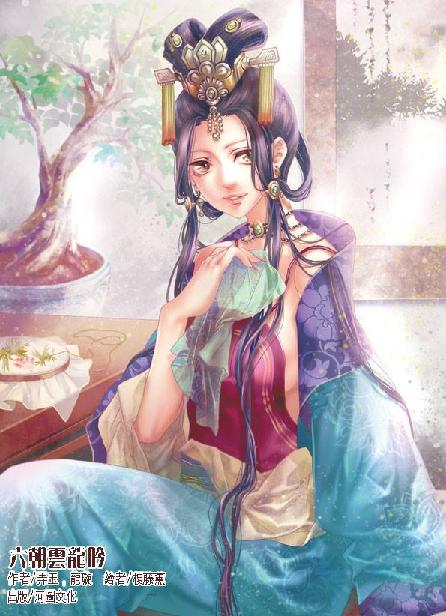
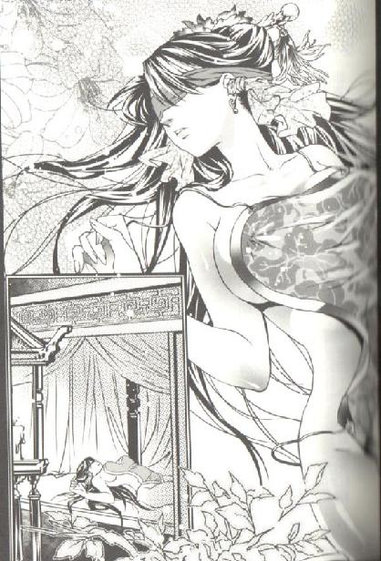
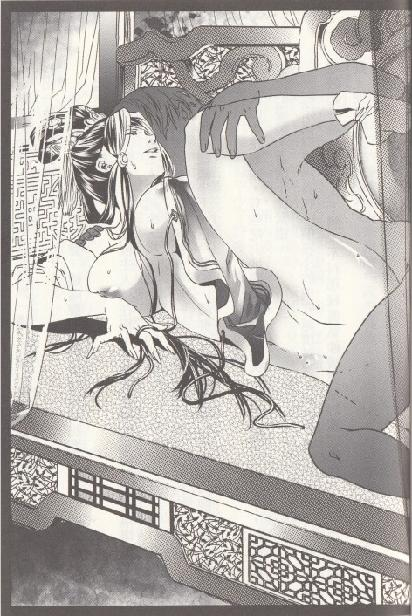

第34集·高徒拜师
临安篇（3/10）
出版日期：2012-05-03
【本集内容简介】
所谓“福无双至，祸不单行”，程宗扬原以为身份暴露才遭禁军追杀，没想到竟是受林冲拖累！下达“格杀勿论”令的那个人却是为了星月湖……
短短几日内，程宗扬接收雪隼团、遇见水浒好汉、因星月湖线人的身份而倍感震惊，又与贾师宪谈定宋国纸币发行权，回头还受到胁迫而跟太乙真宗的蔺老贼签了“城下之盟”，到底有完没完？再添上掐住云家安危来跟自己谈生意的黑魔海，该说一团和气、大家发财吗？
※ ※ ※ ※ ※

封面人物：阮香凝

插图：李师师

插图：阮香凝
情形大大出乎程宗扬所料，沿小路走了不到两里，就遇上三起敌人，每一起都至少有五人。以他现在的修为，用不着李师师帮忙就能搞定任何一批敌人，但想办得干净利落，恐怕还要多修炼几年。否则一旦引来群敌围攻，程宗扬倒是有七分把握杀出重围，可李师师连三分的把握都悬。
眼看敌人的搜索越来越严密，程宗扬不得不带着李师师退进山林深处。
伏在树后看着那些剽悍的汉子，程宗扬脑中不禁浮现出自己临行前拜会林冲的一幕。当时自己敲开林宅的大门，报了身份，不多时林冲便迎了出来……
看到林冲两眼带着血丝、宿醉未醒的样子，程宗扬不禁笑道：“林教头昨日得了宝刀，喝的一场好酒。”
林冲摇头叹道：“与鲁师兄一直喝到三更方散。鲁师兄量宏，林某却是喝得多了，直到现在还宿醉未解，惭愧惭愧。”
两人分宾主坐下，林冲道：“程兄此来，不知有何指教？”
程宗扬道：“师师小姐刚回临安没几日，闻说城南凤凰岭风景极佳，难得今日天气正好，在下想请师师小姐往凤凰岭一游。”
林冲微笑道：“不合适吧？”
林冲口气中多少有些责怪的意思。李师师再怎么说也是未嫁的姑娘，一个半点关系没有的男人几次三番找上门来，确实不大合适。
程宗扬咳了一声，厚着脸皮道：“久闻林教头是位豪杰，不至于要做男女授受不亲的酸腐文人吧？”
林冲一怔，然后大笑道：“来人！去请师师姑娘，就说程公子前来拜访。”
婢女锦儿上楼去请李师师，老仆端上茶来。林冲让过茶，抚膝叹道：“林某一介武夫而已，且莫辱了‘豪杰’二字。”
程宗扬笑道：“林兄一身功夫，又当着八十万禁军教头，说声豪杰那还不是响当当的？”
林冲苦笑道：“程兄有所不知，八十万禁军教头不过说着好听，论职份，只是从九品的小武职，在禁军里车载斗量。”说着林冲长吁了一口气，“人道是‘英雄豪杰，人中龙凤’，林某却是被这‘豪杰’二字误了终生！”
鲁智深与林冲虽然都是义薄云天的英雄好汉，性格却大相径庭。鲁智深为人豁达，好酒好肉，佛门的清规戒律他想守便守，不想守的全不放在心上，当了和尚也豪放自若。林冲的性子却是稳重内敛，在禁军困顿多年，秉性中有些喜怒不形于色的深沉。也许今日是宿醉的缘故，程宗扬头一次看到他内心压抑的一面。
程宗扬有心与林冲攀谈，拿着茶碗在手里慢慢转着，“林兄何出此言？”
“豪杰……”林冲自失地一笑，“程兄可见过一个十二岁的少年被人称为豪杰吗？”
“是吗？”程宗扬来了兴趣。
“林某十二岁那年，被一个大人物称为豪杰，自此误我终生。”
林冲拿起茶碗，一口饮尽，然后抹了抹胡须上的水迹。
“当年家父也是禁军教头，林某去校场给家父送饭，正遇上前来练兵的岳帅。岳帅一听林某的名字，便道：‘此子将来必是豪杰！’”
听到“岳帅”二字，程宗扬就一阵火大，岳鸟人啊岳鸟人，怎么又是你？
林冲道：“岳帅只是随口一言，于林某却是终生负累。数年之后，岳帅殁于风波亭，林某从此蹉跎官场，每次升职，主官都道：‘林教头豪杰难得，且去练兵为是。’十余年间就此再无寸进。”
林冲说起往事，口气中有三分自傲，却有七分郁气，“林某到现在都不明白，当年声名赫赫的岳帅，为何会对我这个不起眼的小娃娃青眼有加？”
这你可问对人了，其中的原因，整个六朝恐怕只有我知道。程宗扬充满同情地看着林冲——但我肯定不会告诉你的，林教头。
林冲性格中本有酷烈和快意恩仇的一面，岳鹏举的一句赞语成了他的原罪，在官场中屡被打压，造成他的深沉内敛。心里这口闷气郁结已久，此时借着未解的酒意向程宗扬吐露出来，不禁有些难以自持。
帘外脚步轻响，林娘子捧着一只木盘进来。她仍穿着昨天的织锦小袄，髻上戴着一支澄金的凤钗，只是眉眼间少了那份若有若无的妩媚，多了几分淑雅娴静的气质。只听她的脚步，便知道她确实是不谙武功。
阮香凝将木盘放在桌上，捧起里面的汤碗，柔声说道：“妾身刚做的醒酒羹汤，官人趁热喝了，不然又该头痛了。”
林冲接过汤碗，一面对程宗扬道：“让程兄见笑了。”
程宗扬笑道：“嫂夫人这么贤惠，小弟羡慕还来不及呢。”
林冲喝了几口，对妻子低声说道：“这些核桃仁不必再去皮了，你身子弱，做汤的核桃仁还要再去皮，虽是好看了，但耗神费力。一般揉碎了，哪里就不能吃？”
程宗扬赞道：“嫂夫人好耐心，核桃仁还要再去皮，这也太细致了。”
“却也不难。”阮香凝望着丈夫，柔和地说道：“用滚水烫过，再仔细剥去就是了。核桃仁那层皮入汤味道苦涩，要剥了才合口。”
“真羡慕林教头的好福气啊。”
阮香凝柔柔一笑，“官人每日在外奔波，妾身别无所长，只能在衣食上多照料我家官人些了。”
程宗扬知道阮香凝的底细，本来是暗含讽刺，但看到汤中那些核桃仁都仔细去过皮，然后再碾碎，一颗颗晶莹如玉，不禁心头微动。
能为一个男人如此细心，阮香凝难道仅仅是在利用林冲吗？会不会是自己一开始就错了，林娘子并不是凝玉姬？
再仔细去看阮香凝的眉眼，程宗扬更确定自己的判断没错。阮香凝虽然玉容姣丽，有着成熟女子的迷人风韵，但和她姐姐阮香琳一对比就能看出异样。同样成婚十几年，阮香琳那种成熟妇人的风情沉浸到了骨子里，阮香凝却更多是用脂粉描抹出熟艳的气质。从两人的举止也能看出，林冲与阮香凝之间虽然亲密，却没有多少夫妻间的亲昵——当然，可能是人家不好当着自己的面流露出来。
程宗扬不敢多看，只装作无意地扫了几眼，便拿起茶盏喝茶。
片刻后，一个纤柔的身影从楼上下来。程宗扬已经不是第一次见到李师师，但每次见到，仍不禁为之心动。
这个未来的名妓仍然穿着护士颜色的白衣素裙，双鬟垂肩，眉眼盈盈，秀美无俦。同样的白色，别人穿起来也许中规中矩，李师师穿在身上，非但没有被白色遮掩，反而愈发鲜明。娇嫩的肌肤白里透红、吹弹可破，整个人如同一株幽淡而鲜活的兰花，在一片素洁的白色中显露出蓓蕾初绽的柔艳。
自己昨天赠她那套《金瓶梅》，挑逗的意味可谓十足。如果是别的女子，多半会觉得自己的尊严受到冒犯而愤然恚怒，像月霜那样拿刀追杀自己几十里也不意外。但程宗扬相信李师师不是这种女子。
她对人际关系有种天生的直觉和敏感，绝不会因为自己摆出一副大灰狼的面孔就被吓到。她应该是那种有能力把自己每项优势都发挥到淋漓尽致，在烈火中曼舞而不会被火焰触到的女子。
李师师果然没有让自己失望，她像什么都没有发生过一样瞥了他一眼，然后向姨父、姨母行礼如仪。
喝过醒酒汤，林冲精神好了很多，不过眉头微微皱起，似乎有点后悔自己刚才说得太多。他捋了捋胡须，温言道：“师师，程公子请你往凤凰岭一游，我唤你来，想问问你的意思。”
“回姨父，家中出了那些事，”李师师轻轻道：“师师哪里会有出游的心思？”
程宗扬一愣。这丫头什么意思？吊我胃口？我是想救你的好不好？亏我还觉得你有直觉、够敏感呢。
林冲无奈地朝程宗扬一笑，正待开口替她拒绝，李师师又道：“不过姨娘的身子尚需调理，有一味药产在凤凰岭，师师正要去采。师师一介女子，孤身入山多有不妥，程公子若是无事，还请劳烦一二。”
程宗扬心里狠狠向李师师竖了根大拇指，这丫头确实有一套，换作潘姐儿、乐丫头，肯定不会有这么多弯弯绕绕。这下子没了孤男寡女同车出游的名声，变成家中亲眷和好友一道给女主人采药治病，放到哪儿都能拿得出手、说得出口。
阮香凝柔声道：“姨娘的病已经让师师操心了，哪里好再劳烦程公子呢？”
程宗扬讶道：“嫂夫人身体有恙？不知是何病症？小弟还认识几个高明的大夫，要不要请来给嫂夫人看看？”
阮香凝玉脸微红，扭过脸去。
林冲起身道：“拙荆只是体弱，多谢程兄弟有心。师师，这几天临安城中不是十分平静，你与程公子路上多加小心，早去早回。”
李师师敛衣行礼，“师师知道了。”
林冲一路送两人出门，程宗扬随口道：“林兄刚才说城中不靖，可是出了什么事吗？”
林冲点了点头，“闻说有一名巨寇潜入城中，皇城司已经知会六扇门，着力查找。”
程宗扬心里怦怦跳了几下，这名巨寇指的是自己还是另有他人？会不会是击杀薛延山的凶手呢？
程宗扬问了几句，林冲也不知详情，只道皇城司已经全力戒备，长安的六扇门总部也派人前来协助。
长安六扇门……程宗扬心想：如果是针对自己，泉玉姬怎么也该给自己传个消息。不过话说回来，自从泉玉姬返回长安就和自己断了音讯，她现在究竟怎么样？郑九鹰的事有没有暴露？六扇门会不会清理门户？这些事自己一点都不知道。
如果泉玉姬被派到临安，有魂丹的关系，她一踏入城中，自己应该会感应到她的存在。这样看来，六扇门派来的应该是其他捕快。
阮香凝垂着头慢慢走着，忽然看到丈夫靴上的泥土，她屈下膝，从袖中取出丝帕，蹲身擦去靴上的污迹。阮香凝做得自然，林冲显然也习惯了她的服侍，夫妻间虽然没有言语上的交流，但那种相敬如宾的氛围却作不得假。
程宗扬被自己的发现搞得糊涂起来。阮香凝身为黑魔海的御姬，在林冲身边潜藏十几年，至今还保持着处子之身已经是很古怪的事，如果她一直在欺骗丈夫，为什么颇有情分呢？况且林冲也不是傻瓜，成亲十几年的老婆到现在还是处女，他难道会不知情？
程宗扬觉得自己像陷在了迷雾里，这一切究竟隐藏着什么样的秘密？
※ ※ ※ ※ ※
离开林冲家已经有一段时间了，程宗扬头晕目眩的感觉仍在，在林家所留下的疑问画面，至今仍清晰地在脑中盘旋，只是自己想不出答案，同样也想不出与李师师一起离开林家后，为何会遭到伏击？
山林间，一名汉子神情委靡地倒在树下，他包着青布头巾，一副脚夫打扮，但脚上的军用牛皮硬靴暴露了他的身份：宋国禁军。
程宗扬在树下等了半个时辰，才等到一个落单的便衣禁军。情形远比自己想象的恶劣，这半个时辰中，自己就遇上不下三支搜索的小队。这已经不是袭击，而是围捕。
那军汉的口鼻鲜血直流，性子却坚韧得紧，无论程宗扬怎么逼问都不回答，一有机会就试图呼救，惹得程宗扬一阵光火。审讯的手段自己也不是没有，但这会儿群敌环伺，万一惊动搜捕者，自己的手段就白费了。
最后还是李师师出面，从随身的药箱里拿出纱布绷带，为军汉擦去血迹、包扎伤口，然后温言询问。
李师师不但医术精湛，而且容貌过人，被这个如花枝般的少女温柔细致地诊治裹伤，便是铁人也要软上三分。
“奴家姓李，是虎翼军的随军医官。”李师师柔声道：“不知道尊驾是什么人？为什么要追杀奴家？”
那汉子似乎被她的举止打动，啐了口血沫道：“告诉你也无妨！我们是上四军的神卫军！接到太尉府的军令，禁军教头林冲与匪类勾结，图谋不轨，所有出入林家的匪类均可当场格毙！”
说着他看了看李师师，又加了一句：“女眷除外。”
这一着出乎自己的意料，程宗扬奇道：“林教头勾结匪类？你们怎么不去抓林冲呢？”
“好叫你知道！林教头半个时辰前已经被带进府中面见太尉。”
程宗扬与李师师面面相觑，过了会儿才道：“这小兔崽子可真狠！你们这帮缺心眼儿的禁军也真听话，让你们杀人，你们就杀人啊？”
军汉怒目而视，“我们接的是军令！”
程宗扬本来以为自己走漏了风声，这些禁军是专门来对付自己的，这会儿才知道根本就是受了无妄之灾。
“军令是陆虞侯给你们下的吧？”程宗扬冷笑道：“你还以为自己在为国分忧呢，其实是高衙内那小兔崽子看上人家姑娘，不仅设计暗害林教头，还要杀人灭口。干！小兔崽子这么毒，这是升级版的高衙内吧？”
“你胡说！”那军汉听到自己成了帮凶，不禁大为恚怒，“陆虞侯亲自拿来高太尉的手令，哪里有假？”
“陆谦！果然是这家伙！”
程宗扬懒得跟那汉子废话，一掌把他拍晕，然后道：“带队的很可能就是陆谦，那家伙是高衙内的得力爪牙，有他在，这条路恐怕不大好走。”
李师师脸色时红时白，过了会儿道：“对不起，是我连累了你。”
“是我连累你还差不多。”程宗扬笑道：“人家对你是抓活口，对我可是格杀勿论。你若跟着我，恐怕会有风险。”
李师师毫不犹豫地说道：“我宁可跟着你一起死了，也不愿被他们抓到太尉府去。”
程宗扬干笑道：“这种话可不能乱说的。”
李师师玉脸微微一红，半是羞恼地说道：“你也不是好人。”
程宗扬压低声音笑了几声，然后道：“不管我是不是好人，这会儿你只能跟着我走了。”
程宗扬在这种情形下还能嘻笑自若，李师师不禁奇道：“你不怕吗？”
“怕什么？怕这些禁军？”程宗扬摆出一副激昂慷慨的样子，拍着胸膛道：“我若怕他们，就不会来临安了！”
李师师抱着膝盖，把下巴放在膝上，一双妙目波光粼粼地看着他，“高太尉你不怕，梁节度你不怕，这些杀人的禁军你也不怕……你究竟是什么人呢？”
程宗扬笑嘻嘻道：“就是个商人，不信你闻闻我身上的铜臭味。”
李师师啐了一口。
程宗扬一肚子的疑惑，据那名军汉说，陆虞侯拿来的太尉手令称，林冲勾结的匪类中很可能有极端危险的巨寇，负责追捕的禁军一旦生命受到威胁，允许当场格杀。
像高衙内这种恶少，欺男霸女正常，搞到杀人灭口就很古怪了。谁能想到肥头大耳、像只发情小猪仔一样的高衙内，突然会变得这么暴力了？按道理，只要他陷害林教头成功，无论阮香凝还是李师师都是他的囊中之物，根本没必要搞这么大，连进出林家的外人也杀。即使要杀，他也应该去杀花和尚吧？何必找自己这个小商人的麻烦？
但也不排除另一种可能：自己在小瀛洲动手的详情被高衙内知晓，为防止节外生枝，才派禁军来对付自己这个外地商人。但这个可能性如果落实，自己也算倒霉到家了。其实自己不仅一点都没有替林娘子出头的意思，反而巴不得高衙内能赶紧搞定阮香凝，逼出凝玉姬的真面目。
通往梵天寺的小路不仅崎岖难行，而且铺满落叶。论修为，李师师比以前的小香瓜还差了几分，虽然能勉强跟上自己的脚步，但潜踪匿形是不用想了。程宗扬甚至怀疑，禁军里面如果有高手，隔着半里地就能听到两人踏叶而行的动静。
忽然李师师脚下一滑，跌倒在地。程宗扬一把拉住她，却是一块生满青苔的岩石被落叶覆盖，被她不小心踏上，滑了一跤。
李师师虽然被他拉住，却没能站起身，反而一手抚着脚踝，面露痛楚。程宗扬暗叫不妙，一看之下，果然是崴了脚。
“我来背你。”程宗扬蹲下身，一边安慰道：“放心，只要到了梵天寺，我就要他们好看！”
屋漏偏逢连阴雨，程宗扬话音未落，旁边便传来一声冷笑。一名穿着军服的武官从林中出来，冷冷道：“贼子！还不快放下师师姑娘！”
程宗扬慢慢直起腰，“原来是陆虞侯亲自带队，还真给小弟面子。”
“小心。”李师师低声道：“陆谦是禁军的刀法高手，修为比我父亲还高出一筹。”
程宗扬点了点头，提声道：“陆虞侯！你身为禁军武官，又有一身好功夫，是男儿就该在战场一刀一枪搏个功名，何必自贱身份，给高衙内做鹰犬？”
“论功夫，林教头枪棒无双，这十几年可熬到了出头的日子？”陆谦一手按住刀柄，充满讽刺地说道：“程老板不好好做你的象牙生意，偏要趟这漟浑水，未免不智。”
“陆虞侯的消息倒灵通，知道在下是生意人。”程宗扬压低声音，“陆虞侯，只要你肯放在下一条生路，六尺长的象牙立刻送一对到府上，怎么样？”
“陆某身为朝廷命官，岂能接受你的贿赂？”陆谦面无表情地拔出佩刀，寒声道：“天堂有路你不走，地狱无门偏进来！程老板到了九泉之下，切记莫再如此鲁莽。”
挑拨不成、财物没用，程宗扬收起刚才的奸商嘴脸，故作惊诧地说道：“陆虞侯是玩刀的？正好我也有。”
他像变戏法一样从身后拔出一柄钢刀，接着又拔出一柄，笑眯眯道：“而且还比你多一把。”
“程老板身为商人，却私藏利器，图谋不轨。陆某不才，此番当为国效力，替吾主分忧。”
双刀在手，程宗扬胆气顿时壮了几分，他把李师师挡在身后。
“甭废话了，陆虞侯，你的大名我打小就听过，你老人家说得再冠冕堂皇一点，说不定我这会儿就吐出来了。”
陆谦露出一丝困惑，“你从哪里听说过我？”
“《英雄本色》——可惜那个英雄不是你！”
※ ※ ※ ※ ※
程宗扬刀随人走，如猛虎般朝陆谦攻去。满地落叶被他的刀风带动，一瞬间飞舞而起，平添了这一刀的威势。
陆谦的神情变得慎重，他握紧刀柄，双目盯着狂涌而至的落叶，忽然展臂劈出一刀，正中程宗扬的刀锋。
两人同时向后跃去，拉开丈许的距离，交手一回合，程宗扬心里有了底：陆谦的修为与自己差不多，都是第五级坐照境，而且论功力的深厚，他比自己还差了一线。
李师师看着程宗扬的眼神愈发惊讶，她怎么也想不到，以他的年纪，与禁军中成名的刀法名家陆谦硬拼一记，竟然丝毫不落下风！她对修为的进境多少有些了解，除非是有名师指点的出类拔萃人物，能在三十岁之前踏入第五级坐照境的少之又少。李师师知道，自己在武学上的资质颇为平庸，修习数年，如今不过刚过内视的境界，想修至第五级，只怕终生无望。
像程宗扬这样二十多岁年纪便进入第五级的，恐怕只有天才横溢的鹤羽剑姬才能与他比肩。像这样的人才，无论六大宗门还是十方丛林，一旦听闻都会争相招揽，为何他还是个不起眼的小商人？
“程老板不但生意做得好，身手也不凡，只此一刀便足以成名。”
“姓陆的！再接我一刀试试！”
程宗扬将双刀收在肘后，接着一步踏出，一招虎啸生风，无边落叶盘旋而起，双刀的锋芒隐敛在落叶间，仿佛一对待机而动的虎牙，随时准备择人而噬。
陆谦忽然道：“程老板方才猜错了，这次带队的不是陆某，而是太尉府的史总教头。”
话音未落，一根熟铜棍破空而至，轰然一声破开飞舞的落叶，击在刀锷上。
程宗扬左腕剧震，钢刀脱手飞出。
一条大汉威风凛凛地喝道：“贼子！还不束手就擒！”
那位史总教头身材高大，虽然也是五级的修为，但招法纯熟、身手剽悍，稳稳压过程宗扬一头。程宗扬终究还是江湖经验太少，一招失误落在下风，再难抢到主动，这会儿只剩一把单刀护住身体，交手不过数合便迭逢险招。
陆谦收刀入鞘，然后大步过来，一把拉住李师师。李师师竭力反抗，但陆谦劲力一送便封了她几处穴道。
姓史的总教头挑眉道：“太尉有令，出入林家者，格杀勿论！陆虞侯，你敢违令吗？”
“史总教头，若是旁人，杀了无妨，但这个女子是高衙内指名要的。陆某擒下她，送入府由衙内处置，太尉如有责怪，陆某一身担之。”
史总教头“嘿”了一声，对陆谦巴结高衙内的手段有些看不上。但高太尉对小衙内爱如珍宝，真要依太尉的命令把这个女子杀了，到时小衙内怪罪起来，自己也难担当得起。
程宗扬越听越不对。“格杀勿论”的命令竟然是高太尉亲自下的，反而是陆谦为了讨好高衙内，擅自添上“不杀女眷”，这到底是怎么回事？但他这会儿命在旦夕，顾不上分辨其中的古怪。
程宗扬接连三刀，全用进手，拼着两败俱伤朝史总教头攻去。史总教头稳占上风，当然不肯与他玩命，向旁退了一步，暂避锋芒。
程宗扬趁机朝陆谦猛扑过去，喝道：“想走？先问我答不答应！”
陆谦左手挟住李师师，右手拔刀，心下冷笑。这个年轻商人果然缺乏经验，他如果与史总教头力拼到底还能多活几刻，这时转而与自己交手，只要挡住他两三招，史总教头从后攻来，要不了几下就能结果他的性命。
程宗扬的双刀只余一柄，威势大减。陆谦看准他的刀路，抬手一封，留了三分余力要将他缠住。谁知那个年轻商人左手寒光微闪，不知何时多了一柄匕首，接着仿佛一股冰风扫过，手中的长刀蓦然一轻，已被匕首斩断。
陆谦怪叫中拼命向后躲去。程宗扬的眼中充满杀机，本来想等到野猪林的时候再利用这家伙一把，但他敢抢自己盘里的菜，是可忍孰不可忍！先杀了再说！
程宗扬面带杀气，珊瑚匕首加速落下，切向陆谦的脖颈。陆谦的额头迸出冷汗，忽然他身体一扭，挟起李师师挡在自己身前。
珊瑚匕首猛然一顿，停在李师师身前。李师师玉颈下一粒充作纽扣的珍珠悄然裂开，白衣从颈到胸齐齐绽开一道刀痕，露出里面如玉的肌肤。
众人的目光同时落在李师师胸前，林中一时间鸦雀无声。
李师师玉颊雪白，神情间却没有多少慌乱，但她穴道受制，无法趁机脱身，只能软绵绵地倒在陆谦身上。她胸前绽露的肌肤白得耀眼，隐约能看到乳房隆起的轮廊。
程宗扬这一招中途停住，虽然匕首不重，没有受伤，但胸口也禁不住一阵气血翻腾。他的目光慢慢上移，停在李师师脸上。
四目交投，李师师眼中流露出一丝决然，似乎要程宗扬下手杀了自己，免得自己被掳入太尉府中受辱。
程宗扬露出一个近乎狰狞的狠笑，“放心！你是我盘里的菜，除了我，谁也不能动！”
耳后风声响起，史总教头的熟铜棍再次袭来。程宗扬翻身格住铜棍，然后伏低身体，猛然窜出。
史总教头大喝一声：“哪里逃！”说着大步跨出。
陆谦捡了条性命，立即挟起李师师逃开。对他来说，讨好高衙内才是最要紧的。
这边程宗扬被史总教头缠住，无法脱身，只能眼睁睁看着他把李师师带走。
程宗扬一反刚才拼命的架势，左闪右避，有时逃出丈许，又转身回来，说逃不像逃，说打又不交手，只在方圆数丈的圈子里东躲西藏。
这样一味逃窜对背后的敌手半点威胁都没有，史总教头尽可以从容出招，占尽上风。程宗扬左支右绌，几次都险些被熟铜棍击中。
史总教头越逼越近，眼看就要击杀那小子，忽然脚下一滑，却是踏到落叶下一块岩石。
史总教头的身体失去平衡，一手拄着熟铜棍单膝跪倒。紧接着他看到那个年轻人回身挥起匕首，像削断一根筷子般，轻易截断了自己的熟铜棍，顺势将冰玉般的锋刃送入自己的胸口。
鲜血仿佛被冻在胸中，没有溅出一滴。接着程宗扬额角的伤痕一阵火热，将弥散的死气吸入体内。
一刀杀死八十万禁军总教头，看似容易，但程宗扬来回绕了五六趟，才引得他踩到那块被落叶覆盖的岩石，其中的惊险只有自己知道。
一击得手，程宗扬立即拔出匕首，转身欲追，却看到十余名穿着便服的军汉正从四面围来，各自举起随身的兵刃。而陆谦早已趁机挟持着李师师逃上山梁。
程宗扬一手持刀、一手持匕，许久没有过的杀戮欲望在胸中奔突。他闭上眼睛，感受着额角伤疤霍霍的跳动，然后猛地张开眼，暴喝道：“来吧！”
※ ※ ※ ※ ※
“林教头，这边请。”
林冲微微躬身，“有劳富管家了。”
太尉府的管家富安提着灯笼，领着林冲进了一间厢房，一边笑道：“教头也知道，太尉的性子从来不肯麻烦人的。今日听说林教头得了一把难得的宝刀，等闲不肯离身，才劳动教头亲自来一趟。太尉下值时辰已晚，还请林教头见谅。”
林冲连声道：“不敢、不敢。”
富安道：“请教头在此稍等，太尉一会儿便到，小的先去拿灯烛来。”
“富管家请！”
富安提着灯笼离开，林冲独自坐在黑暗中，心里又喜又忧。一时担心高太尉索要宝刀，一时又觉得能用宝刀换个前程也值得了，一时又想起程宗扬临行时的告诫，隐隐觉得不安。
思绪翻滚中，眼角忽然瞥到一个暗影伏在一侧的厅中，方方正正的，不知是个什么东西。林冲念着这是太尉府，不敢多看，将刀抱在怀里，双目低垂，屁股虚虚挨着椅面，敛息而坐。
富安一去无踪，等了一顿饭时间也不见有人进来。林冲的心里越想越乱，听着周围没有脚步声，索性站起身踱了几步。
半个时辰过去，仍然不见人影。林冲已经在厢房走了几个圈子，瞧着旁边厅中的物体越看越怪。他想起传言中高太尉掌军十余年，搜刮了无数财物，家中奇珍异宝无数，不由好奇心起，走过去小心地摸了摸。
那东西有半人高，角部四四方方，像是个桌子，但两边都摸不到头，怕是有七八尺宽窄，等闲人家无论如何也用不了这样大的桌子。而且桌上凸凹起伏，不知道摆着些什么。
正疑惑间，外面突然光亮大作，无数灯笼同时举起，将整座大厅照得里外通明。
林冲的手掌僵住，愕然发现面前是一个巨大的沙盘，沙盘上山川连绵，城池相望，正是大宋的四百军州。不仅如此，上面还用小旗标记各地的军力分布，每一个标记都是宋国的最高军事机密。
盯着那张沙盘，林冲浑身的血液都仿佛凝固，接着他猛地抬头，厅上一面黑底匾额上四个大字赫然在目：白虎节堂！
陆谦大步进来，厉声道：“林冲！你竟敢持刀私闯白虎堂！不知道这是死罪吗！军士们！抓住他！”
禁军蜂拥而入，刀枪如林，将林冲团团围住。
一瞬间，林冲握住屠龙宝刀的刀柄，手背青筋迸起。
陆谦叫道：“林冲！你竟敢做出这等事！难道不念及家人吗！”
林冲神色数变，最后扔下宝刀，抬起双手高声道：“冤枉！林冲冤枉！”
陆谦暗地捏了把冷汗，见状立即一挥手，“拿下！”
军士们将林冲五花大绑，押着他离开。白虎节堂重新陷入黑暗，只有那把屠龙刀横在地上，隐约从鞘中透出寒光。
程宗扬伏在匾后，小心按住伤口，不让鲜血滴下。凤凰岭一战，他好不容易杀开一条血路，冲出重围。从禁军口中得知太尉府设在内城，从凤凰岭的内城城墙翻过也不甚远，程宗扬顾不得赶往梵天寺，一路闯向太尉府。
程宗扬对太尉府一无所知，但有个地方绝不会忘——白虎节堂。只要抓住高俅这个奸贼，十个李师师也能救出来，说不定还能顺手宰掉陆谦。
程宗扬戴上头套，潜入太尉府，抓了个仆人逼问出白虎堂的位置，随即潜入厅中等候。
为了避免林冲察觉，太尉府的人一直等到天黑才带林冲来到白虎堂，从侧厢入厅。林冲在厢房苦候，起身踱步，触摸沙盘，直到陆谦现身将他拿下的整个过程，程宗扬都历历在目。但他始终没有发出一丝声息，因为他发现，隐藏在暗处的不只他一个人。
那个人的修为如何，程宗扬并不清楚。当时他刚藏到匾后，听到门响立即缩身，来不及去看。他只知道自从那个人进入白虎堂，自己就没有再听到任何一丝声息，连林冲也没有察觉厅中还有人在。
不知过了多久，一个人影从厅上下来，慢慢走到那柄屠龙刀前。他弯下腰，抚摸着刀身，发出一声长长的叹息。
“锵”的一声，宝刀出鞘，紧接着一抹寒光如闪电般掠起。
程宗扬浑身的汗毛都竖了起来，身前那面写着“白虎节堂”的匾额悄无声息地裂成两半，刹那间刀光及体。
程宗扬一手按着臂上的伤口，来不及去拿怀中的珊瑚匕首，他用受伤的手臂抓住背包，不管里面是什么，一把掏出来，迎向屠龙刀锋锐无匹的刀光。
“叮”的一声，无坚不摧的屠龙刀竟被他手里一个莫名其妙的破玩意儿生生挡住。
手臂上的伤口被震得裂开，鲜血顺着手臂直淌而下。程宗扬手臂剧痛，却死死握住那个东西不放手。借着屠龙刀一闪而过的寒光，他发现自己手里握的是一只光秃秃的剑柄，用来挡住屠龙刀的正是护手的剑锷。
失去剑身的剑柄显得又古又旧，上面贴着一张火红的符印，透出一丝诡秘的气息。鲜血浸透了符印，随即又被屠龙刀的寒光冻成一层薄冰，使符印上出现一道细细的裂纹。
眼前刀光一收，那人落在沙盘上。黑暗中，隐约能看到那人头上戴着一顶乌纱帽，两根帽翅笔直伸开，竟是一位高官。
这家伙不会就是高太尉吧？只听说高俅是个踢球的高手，没听说他很能打啊？
程宗扬心里嘀咕着，手中的剑柄忽然发出一声犹如雷声的低鸣，仿佛寂寞多年的剑客遇到了旗鼓相当的对手。紧接着，程宗扬丹田中气轮一滞，全身的真气都仿佛被抽取一空。
就在这时，那人的屠龙刀寒光重现，刺骨的寒意扑面而来。
程宗扬惊骇欲绝之际，剑柄上那张结冰的火红符印乍然破碎，一道电光从空荡荡的剑柄中飞出，在剑锷上腾跃变形。
屠龙刀的寒芒已经逼到面前，程宗扬奋起最后一点余力，握住剑柄死命朝屠龙刀的刀锋劈去。
刀剑相交，没有发出丝毫声响，然而两股无形的气流盘旋迸出，整座白虎堂都仿佛为之一震。
屠龙刀的寒光猛然一暗，无坚不摧的刀锋竟然被电光崩开一个米粒大小的缺口。
不过程宗扬没来得及出手，就看到刀锋的缺口正以肉眼可见的速度迅速愈合，屠龙刀的光泽一点一点浮现出来。与此相反，剑柄上的电光却开始收敛凝固。
犹如昙花一现的电光褪去，原本光秃秃的剑柄上多了一柄刃身。那道锋刃宽不过两寸，长度却将及三尺。刃身修长，顶部微微弯曲出一个弧度——程宗扬这才发现，这玩意儿根本不是剑，而是一把细长的战刀！
与屠龙刀如冰玉般的通透不同，由电光凝成的刀锋遍布黑白交错的纹路。那些纹饰完全超越了程宗扬知道的锻造技术，最细处比发丝还细，而且全是曲线，弧度流畅自然，没有半点生硬。细密的线条构成无数玄奥繁复的图案，一眼望去，便使人觉得奥妙无穷。
这东西……自己虽然不是很懂，但看起来很厉害的样子……
刀柄还没凝成刀刃的时候就能把屠龙宝刀打出缺口，眼下锋刃已成，还不一下子把屠龙刀给砍成两半？
眼看那人的屠龙刀再次袭来，程宗扬大喝一声，细长的刀身撕开空气，带着尖锐的啸声迎向屠龙刀。
双刀相交，黑白缠绕的刀身只微微一震，就被屠龙刀砍成两段。断裂的刀身飞出，随即化为无形。
程宗扬只觉丹田剧痛，屠龙刀仿佛透体而入，将气海中旋转的气轮斩开，浑身经脉都仿佛被撕裂、扭曲。与此同时，屠龙刀也袭上面门，冰寒的刀光劈开程宗扬的头套，几乎将他的脑袋砍成两半。
我干！这鸟刀刚现身的时候能把屠龙刀打到下风，凝成刀刃却一把输了个干净，这也太扯了吧！
程宗扬顾不上控诉这把鸟刀的设计者是缺心眼还是太混账，眼前一黑，便什么都不知道了。
※ ※ ※ ※ ※
眼前是一顶华丽的纱帐，帐顶用珍珠攒成图案，在烛光映照下炫人眼目。程宗扬眯起眼睛，模模糊糊看到帐顶的图案是一群人正在蹴鞠的场景……
谁这么神经病？睡觉的纱帐还镶着蹴鞠图？
不对啊，我不是应该在白虎堂吗？
程宗扬清醒过来，急忙去摸脑袋，手掌一硬，却是头上包着厚厚的纱布。
“你醒了。”帐外传来一个声音。
程宗扬扭头去看，只见是一个穿着绛红官袍、头戴长翅乌纱帽的高官。他背对着自己坐在椅中，面前的桌子上放着一只打开的背包，正在翻看里面的物品。
程宗扬伸手一摸，自己的钢刀、匕首，包括那只剑柄都被搜缴一空，想动手只有肉搏一途。问题是人家的屠龙刀正放在桌旁的架子上，真打起来，恐怕不等自己爬起身，就在床上被砍成十段八段了。
那人放下从背包里翻出来的阴阳鱼，然后转过身，拂了拂衣袖。
看到他的面容，程宗扬像见了鬼一样瞪大眼睛。
眼前这人自己见过！不但见过，还一起喝过啤酒、抽过雪茄、看过鞠赛，还差点一起共享了他的女人……
“苏佳朴！”
“正是。”
程宗扬干笑道：“没想到会遇上老朋友，哈哈……”
苏佳朴打断他，“你是从江州来的吧？”
程宗扬硬着头皮道：“江州啊，我倒是去过。”
“前日我去橡树瓦便有所怀疑。”苏佳朴低叹道：“世间除了岳帅，哪里还有人一眼就能认出啤酒和雪茄呢？”
程宗扬脑中灵光一闪，“是你！是你去送的情报！”
苏佳朴微微颔首。
心底的疑惑终于澄清，这个苏佳朴就是一直为星月湖提供情报的线人。绝处逢生，程宗扬长出了一口气，“没想到你会在太尉府！难怪孟老大这么多年都没能弄清你的底细。哈，我还以为你是书吏呢，看这官袍，好像混得不错啊！”
苏佳朴伸出手，淡淡道：“认识一下，鄙人姓高，高俅。”
程宗扬张大嘴巴，表情就像被雷劈过一样。
穿着太尉冠带的高俅，看上去比橡树瓦子的苏佳朴老成了许多，眼角的皱纹愈发细密，眼神却锐利之极，不再是那个独自看球的寂寞商人，而是位高权重、城府深沉的当朝太尉。
程宗扬后来怎么也想不起来自己到底是怎样握住的高俅的手，还用力摇了摇。
“高太尉……从小你和高衙内就是我崇拜的偶像……我有点不太清醒……为什么你会用‘苏佳朴’这个名字？”
“高某曾为东坡居士的书僮，用此化名，以示不曾忘本。”高俅松开手，眉峰一挑，“很意外吗？”
“太意外了。”程宗扬老老实实道：“我真没想到高太尉会是……会是……这么铁杆的球迷……”
“当年我与小孟、小艺、明信、小景他们组成的鞠队，可是鞠场上的不败之师。”高俅叹道：“一晃这么多年过去了，他们做买卖的做买卖，当杀手的当杀手，教书的教书，卖画的卖画，我还以为今生今世都看不到星月湖的战旗了。”
程宗扬小心道：“高太尉，你和岳帅……没仇吧？”
高俅毫不隐瞒地说道：“岳帅于我有再生之恩。第一次见面时，我还是东坡居士门下的书僮，岳帅刚刚声名鹤起，整日奉承他的不知凡几。岳帅却对我青眼有加，指点我苦练蹴鞠之术，终于让我高俅靠着一脚好球出人头地。”
程宗扬不知道有多庆幸，见惯了岳鸟人的仇家，这还是头一次见到星月湖大营以外的人表示受过岳鸟人的恩惠，不知道是不是老天开眼呢？
“你和孟老大他们既然认识，怎么孟老大不知道你就是如今的高太尉呢？”
“他们只知道我是苏佳朴。”高俅道：“我本名叫高枢问，靠着蹴鞠接近宋主之后，我不仅与他们断了联系，连名字也改了。嘿，差不多是二三十年前的旧事了，小孟他们未必记得那个苏佳朴，何况是如今的高俅高太尉呢？”
程宗扬憋了半晌，“难道这都是岳鸟……岳帅的安排？”
高俅点了点头，“岳帅眼光之长远，当世不作第二人想。谁能想到他声名初起之时，就料到有风波亭之变？在他的指示下，高某刻意转为军职，在军中沉浮二十年，人人都道我是靠蹴鞠得宠的幸臣，就连风波亭之变后，亲附岳帅的文武官员被尽数清洗，也没有动到高某分毫。直到星月湖大营解散、岳帅生死不明，我才依照他当初的吩咐，在明庆寺的祈福榜上留下字条，与星月湖旧部联系。”
程宗扬佩服地说道：“孟老大他们想查一个人，恐怕宋主的私生子都能查出来，可十几年来都没弄清你是谁，太尉怎么做到的？”
“每次都是我先放好情报，再往明庆寺的箱中投下字条。见面的时间、地点每次都不固定，他们哪能找得到我？橡树瓦这次时间太紧，我又急着去看齐云社和石桥社的比赛，才冒了风险。”
程宗扬前后想了想，如果不是高俅主动说出来，自己也想不到和自己喝酒看球的苏佳朴就是来传递情报的线人。这样还算担了风险，他以前的小心谨慎可想而知。
“还有一个问题，”程宗扬道：“追杀令是太尉下的，还是你那位小衙内借你的名义下的？”
“是我。”
“为什么？”
高俅的目光落在桌旁的屠龙刀上，“你可知道这屠龙刀是谁的？”
程宗扬怔了一下，然后明白过来，“岳鹏举！”
“不错，正是岳帅的佩刀。”高俅露出一丝黯然的眼神，“岳帅在风波亭之变前赠我此刀，高某收在卧室已有十五年，从未让外人一睹。可恨犬子无知，竟然拿了此刀胡闹，既说不得，只好将见过屠龙刀的人都杀个干净。”
程宗扬苦笑道：“太尉一出手就雷厉风行，差点儿要了我的小命。”
高俅并没有多少歉意，淡淡道：“事关岳帅，宁可错杀一千，也不放过一个罢了。”
房内的铜铃微微一响，高俅止住程宗扬的话语，然后拉了拉绳索。
片刻后，有人进了院子，在房外远远道：“老爷，小衙内来了。”
高俅沉下脸，“让他进来！”
※ ※ ※ ※ ※
高衙内像只皮球一样跳进来，一脸天真烂漫地叫道：“爹！”
高俅喝道：“孽障！跪下！”
高衙内被他吓了一跳，委委屈屈地跪下来，小声道：“我叫声‘爹’又怎么了？你不想听，我不叫还不成……”
“你干的好事！”
高衙内拧着脖子道：“潞王爷家的老三不是我打的！”
“谁问你这个！”
“在翠云楼争风吃醋，打死人也没我的事！都是小梁子他们干的！”
高俅被这个义子气得七窍生烟，指着那把屠龙刀喝道：“我问你！这是怎么回事？”
高衙内抬起头，“你说这个？哈，爹，我还没跟你说呢，孩儿看中了威远镖局李总镖头的老婆，想把她弄来玩玩，谁知道她有个妹子比她还漂亮几分。孩儿一打听，哎哟喂！你不知道她妹子竟然是林冲的老婆哎！孩儿想到硬抢，怕往爹的脸上抹黑，于是就想了个好主意，先把这刀卖给林冲，然后说府里失窃，把林冲当贼抓起来，然后把他老婆给抢过来！爹，孩儿够聪明吧？爹，你还没见过林冲的老婆吧？真是水灵！那腰细的，屁股扭的……等孩儿玩过了，让爹你也玩玩！”
“孽障！胡说些什么！这刀岂是你轻易能动的！”高俅抓起戒尺，喝道：“把手伸出来！”
高衙内把手背到身后，叫道：“你凭什么打我！我拿了你的刀又怎么了！你是我爹！你死了这些东西都是我的！”
“都是我疏于管教，才让你这般胡作非为！”高俅说着举起戒尺。
高衙内见他真的要打，直接往地上一躺，打滚叫道：“打人了！打人了！我又不是你亲儿子，你凭什么打我啊！娘！娘！没娘的孩子真可怜！要被干爹打死了！啊啊……”
高俅下令杀光所有见过屠龙刀的人，宁可错杀一千也不放过一个，称得上杀伐决断，可这会儿对着撒泼的干儿子，手里举着戒尺，却怎么也打不下去。
忽然“啪啪”两声脆响，高衙内肥嘟嘟的脸上多了两个掌印。
高衙内的嚎叫声卡在喉咙里，呆呆看着那个脑袋上包着纱布，看起来有点眼熟的男人，半晌后惨叫一声，“爹！有人打我！”说着扑到高俅怀里干嚎起来。
高俅扔下戒尺，顿足道：“打得太轻了些！来人！快拿冰块给衙内敷上！别哭别哭，让为父仔细看看！”
程宗扬哭笑不得，高俅这护犊子也护得太没边了。
“哭个屁！”程宗扬喝道：“再哭还要打屁股！”
高衙内的干嚎声立刻一顿，带着三分怯意从高俅的怀里偷看着程宗扬，片刻后忽然叫道：“你！你不是那个……”
“我是高太尉请来的老师，从今往后都由我来管教你！不听话就打，连太尉也不能说个‘不’字！”
高衙内先去看高俅，高俅虎着脸点了点头。他又看了一眼程宗扬，然后倒在地一通乱滚。
“我不要！我不要！我不要！”
程宗扬朝他屁股上“啪啪”打了两巴掌，那小家伙捂着屁股跳起来，带着哭腔叫道：“爹！”
高俅冷哼一声，“从今往后便由程先生来教你！敢不听话，小心挨打！”说罢拂袖而去，将拿来冰块的仆人赶到院外。
高衙内也想跑，却被程宗扬揪着衣领扯了回来，“往哪儿跑？”
高衙内大喝一声，摆出拳法的架势，叫道：“看我的降龙三十六掌！”
“啪！”高衙内刚摆好架势，脸上又挨了一记。
没等高衙内哭出声，程宗扬喝道：“哭一声一耳光！”
高衙内终于明白爹也靠不住了，一手捂着脸，老老实实地闭上嘴。
“这才乖。”程宗扬道：“认出我了吧？”
高衙内点了点头。
“师师姑娘呢？”
高衙内指了指外面，哭丧着脸道：“我、我没碰她……”
“那你可太幸运了。”程宗扬笑眯眯道：“你要敢碰她，我就把你阉了，送你到宫中当太监。”
高衙内咽了口唾沫，被打肿的脸蛋微微发白。
“瞧你那胆量，阉了又有什么？哪天惹得我不高兴了，我把你的小鸡鸡竖着一切两半，一个变两个，你挺着出去，那才威风呢。”
高衙内捂着脸，嘴巴一咧，几乎哭了出来，“你别吓我……”
“行了小子，往后我就是你的老师，你就叫我师父吧。”
“师父……”
“我没听到！”
“师父！”
“你是属蚊子的吗？”
“师——父！父！父！”
“这才乖嘛。我要去看看师师姑娘，乖徒儿，替为师拿好灯笼！”
高俅身上有着太多的秘密，自己在太尉府内住在一处僻静的独院，却把正房让给儿子去住。高衙内从小就被娇纵，养就无法无天的性子，他年纪不过十几岁，门外却站了一排足足十几个姬妾，一个个花枝招展。
看到高衙内亲自拎着灯笼，小心翼翼陪着一个陌生人过来，那些姬妾不禁面露讶色。但诸女都不敢作声，只小心屈膝，双手放在身侧，向来人福了一福。
卧室内灯火如昼，宽大的床榻上躺着一个女子，看容貌正是李师师。她衣衫已被剥去，贴身披着一条艳红的肚兜，掩住胸乳，裸露着雪玉般的玉臂和双腿，一副玉体横陈、任君大嚼的美态。只是她眼上蒙着一条红绫带，连两只耳孔也被丝巾塞住。
程宗扬朝高衙内脑门上拍了一把，咬牙道：“小崽子！你不是说没碰她吗？这是怎么回事？”
“真没有！”高衙内叫屈道：“我连根指头都没碰她，只是让人给她换了换衣裳，敢有半个字假话，天打五雷轰啊师父！”
“你把她剥这么干净，又不碰她，难不成你下面不中用，只拿来看的？”
“是这么回事……”高衙内贴在程宗扬耳边道：“不瞒师父说，我把这小婊子的娘弄上手了，那个老骚货浪得很！就这么用了她女儿没什么意思，徒儿想了个主意，把她的头脸耳朵都蒙上，一会儿把她娘叫来，说我新搞了个小婊子，让她娘按着我来开苞。等干过后，我再把她头罩解了，嘿嘿……”
“自家生的女儿，阮女侠会认不出来？”
“那骚货眼里只有黄澄澄的金子，给她一个戒指，她哪还会看别的！”高衙内眉飞色舞地说道：“那骚货真是够味！师傅，你也尝尝？”
“免了吧。”程宗扬冷笑道：“小崽子，这是你的主意？”
“当然！师父，这主意好玩吧！”
“是陆谦给你出的吧。”
高衙内讪讪道：“师父，你怎么会知道？”
“滚！”
“哎！”高衙内如蒙大赦，转身就走。
灯光下，李师师光洁的玉体散发出如明珠般的肤光。她的皮肤莹白，身材娇小玲珑，整个人如同一只精美的玉坠，让人禁不住想抱在怀中温存。
程宗扬咽了口口水，先拿了锦被将李师师娇美的玉体盖住，然后才解开她的眼罩。
眼罩一松，两行珠泪滚落下来。李师师玉颜凄楚，银牙紧紧咬着红唇，不肯作声。
“是我！”程宗扬露出一个大大的笑容，得意洋洋地说道：“惊喜吧！我早说过，你是我盘里的菜！除了我，谁也不能动！哈哈！”
李师师却没有露出半点惊喜，她闭着眼，泪珠倏倏而下。
程宗扬一拍脑袋，拍到伤口，先“哎哟”叫了声痛，接着道：“我忘了，你的耳朵还塞着呢。”
“不用了。”李师哽咽道：“她们塞得不紧，你们刚才的话我都听到了。”
程宗扬愕然间，李师师睁开双眼，泪眼模糊地说道：“我想死……我宁可让那个畜牲占了身子，也好过这样丢脸……呜呜……”
程宗扬手掌伸入被中，握住她的纤手。李师师像抓到一根救命稻草那样紧紧握住，哭得肝肠寸断。
“对不起……我……我曾经想利用你，”李师师哽咽道：“我真的一点力量都没有……”
程宗扬笑道：“能被师师姑娘利用，是我的荣幸。”
李师师的唇角抽动了一下，想笑却没笑出来。
半晌她轻声道：“小时候娘曾经带我去算过命，那个白须飘飘的匡神仙说，我的命是贵人格，十八岁时会有一场大难，而我的命中注定会遇到贵人。”
程宗扬曾听到阮香琳提及此事，没想到她这会儿会主动提起。
“如果我选择贵人，虽然会有小厄，终究可以遇难成祥，父亲也会因此飞黄腾达。如果错过贵人，不但性命不保，甚至还会祸及父母。这些话娘从小就对我讲过，这次镖局出事，娘认定就是匡神仙说的大难。”
程宗扬玩笑道：“我也算不得什么贵人吧？”
李师师流泪道：“娘说那个贵人是高衙内，整日劝我从了他，好让父母飞黄腾达，不然就是我害了他们。”
“令堂……嘿嘿。”程宗扬干笑两声，没再说下去。
李师师抬起梨花带雨的娇靥，凄然道：“如果不是你，我这会儿已经蒙受一生一世也无法洗脱的耻辱。我现在才发现，即使有身为总镖头的父亲，有受人尊敬的师门，有一个号称英雄豪杰的姨父，自己却没办法改变什么。”
程宗扬不知道该怎么安慰她，只好道：“别哭了，休息一下。”
“不，我要说！”李师师咬了咬唇瓣，“他们玩过我娘，又想玩我们母女。太尉府的权势和地位那么大，我逃不了，也躲不开……”
哭泣中，李师师将自己的委屈和遭遇的耻辱一并发泄出来。程宗扬可以理解，好好一个大姑娘，母亲竟然抛开贞洁和起码的道德，成为临安城臭名昭著的花花太岁又一个玩物。她是一个妻子、一个母亲，却为了钱财和荣华富贵，委身给一个年纪只有她一半大的小衙内。
“一想到这样的耻辱，我就没有勇气再活下去……”李师师哽咽道：“我想过去死，我真是太没用了，只有这一件事是我能做到的。”
“别说傻话了。”程宗扬道：“你才十八岁，对吧？这年纪还不算活过呢。”
李师师的眼泪仿佛断线的珠子一样滚落下来，她伸出一只雪白而纤柔的玉手，“救我……”她央求道：“把我从这个噩梦里救出来，好吗？”
程宗扬沉默片刻，然后道：“你能舍弃自己的家人吗？”
李师师毫不犹豫地说道：“我宁愿从来没有出生过。”
“你的师门呢？”
李师师掉着眼泪摇了摇头，显然对师门已经心灰意冷。
“那好，”程宗扬郑重说道：“我的公司缺少一名公关部经理，我代表盘江程氏，诚挚地邀请师师姑娘加入本公司，担任本公司首任公关部经理。”
“公关……”李师师的玉颊带着泪珠，愕然睁大眼睛，“这是什么？我可以做吗？”
程宗扬笑了起来，“相信我的预感，你会是第一流的公关人才。”
※ ※ ※ ※ ※
程宗扬从卧室出来，迎面便是一刀劈下。那汉子生得又粗又壮，两膀似有千斤之力，手中的快刀霍霍生风，但真气驳杂不纯，显然不是什么好手。
程宗扬避开刀锋，向院中看去，只见十几名恶仆持刀挟棒，高衙内一手捂着脸，跳着脚叫道：“打死他！往死里打！出了事本衙内一个人全担着！”
这头小猪仔倒是不蠢，眼看斗不过自己，师父前、师父后地叫得殷勤，转眼就叫来一帮手下跟自己玩命。
可惜自己今非昔比，想玩命也得有资格。程宗扬有心立威，看那恶汉又一刀劈来，他不闪不避，一拳轰在刀身侧面，真气一吐即收，将那柄钢刀硬生生打得反折过去。
那恶汉虎口震裂，手臂被弯折的刀锋带到，留下一道血淋淋的伤口。
众人惊愕间，程宗扬使出太一经的心法，身如鬼魅，一闪掠到高衙内面前，揪着他的衣领把他拎起来，笑眯眯道：“乖徒儿，想找为师讨教什么功夫？要不然就是小鸡鸡痒了，想一个变两个，一手一个撸着玩？”
高衙内脸色煞白，片刻后无比心虚地说道：“是那个……那个……老骚货来了……徒儿想请师父去玩……玩……”
“师父看着你这徒儿肥嘟嘟的又白又嫩，像是很好玩的样子，不如让师父来玩一个？”
高衙内带着哭腔道：“徒儿一点都不好玩……真的！”
“玩玩才知道嘛。”程宗扬道：“乖徒儿，把裤子脱了，让为师先给你玩个后门别棍！哟，小崽子，你怎么尿了！”
“徒儿被吓得，憋不住……”
“这样也好，先尿净拉空，免得师父一会儿把你的屎搞出来。”
高衙内叫道：“师父饶了我吧！我再也不敢了！打死我也不敢了！”
“师师姑娘今晚就住在这里了，让那些丫鬟进去伺候，你给我滚得远远的。敢靠近这里半步，我就把这两颗核桃塞到你的鸡鸡里面。”
高衙内一愣，“那怎么塞？”
程宗扬微笑道：“想试试吗？”
高衙内连忙道：“不想不想！”
※ ※ ※ ※ ※
高俅坐在书房生闷气，见程宗扬进来，摇头道：“我这个孩儿啊……”
程宗扬笑道：“小孩子嘛，必要的时候也该打打。”
程宗扬心里也有些奇怪，原本他以为高俅只是仗着自己的地位娇纵儿子，现在看来，高俅对小衙内真不是一般的疼爱。别人看屠龙刀一眼，他就要斩草除根；偷了刀出去胡闹的高衙内，他连打都不舍得打一下。别说干儿子，就是亲儿子，溺爱到他这样的也算少见。
高俅叹了口气，似乎不愿多说。
程宗扬坐下来，“高太尉既然是自己人，让小弟解开不少谜团，但还有几件事，请太尉指点。”
高俅拂了拂衣袍，坐直身体，“六朝知我底细的唯你一人，有什么疑惑，尽管问吧。”
“第一件，岳帅是生是死？”
高俅沉默良久，“岳帅那种人岂会轻易死掉？但如果岳帅还在世，这么多年终该有些线索。”
“我明白了。”程宗扬有些头痛地想：岳鸟人的生死看来还是个谜。
“第二件，岳帅安排太尉进入军界，不会只是传递一些情报吧？如果有别的用意，太尉能不能告诉我？”程宗扬解释道：“我准备在临安做些生意，不知道会不会与太尉的目的冲突？”
“岳帅吩咐高某的事，高某每天都在做，临安城中尽人皆知，告诉你又有何妨？”高俅徐徐道：“你在江州与禁军交过手，觉得上四军如何？”
“装备精良、衣甲鲜明，但徒有其表，与传说中的禁军精锐……”程宗扬明白过来，拍案道：“原来如此！”
高俅掸了掸衣袖，“这些年禁军表面还有几个名将，但指挥使以下多是趋炎附势之徒，虽然还有上四军的名号，却已今非昔比，军中贪渎之辈横行，所谓精兵，不过虚有其表。”
程宗扬在江州就有所怀疑，捧日、龙卫二军名头虽响，实力却远不及自己想象中的强悍。高俅军权在握，这些年来釜底抽薪，等于是抽掉了禁军的脊梁骨。
高俅道：“还有什么疑惑，一并说来。”
“确实还有一件。”程宗扬盯着高俅的眼睛道：“太尉府走失的那个侍妾，究竟是怎么回事？”
高俅道：“你看到我身边有姬妾吗？”
程宗扬一怔，这才意识到院中的蹊跷。高俅并不是什么清官，他掌权这些年大肆贪墨，在享乐上的花费没有半点含糊，室中陈设无一不是精致考究。但比起高衙内小小年纪就坐拥成群姬妾，高俅这个太尉的身边却显得十分冷清。
“二十余年来，高某每日如履薄冰，从不敢收纳姬妾。”高俅道：“那个侍妾并不是我府上的。”
“那是谁？”
高俅吐出两个字：“宫中。”
程宗扬震惊之余，只听高俅道：“朝中有贾太师的贾党，有王宰相的王党，还有道门弟子的道流。但谁都知道，我高俅是得幸于先主的幸臣，是货真价实的帝党！陛下有什么不好处置的私事，都会找我来做，因此我贪墨了这么多年，也无人能动我分毫。”
高俅又道：“陛下生母早亡，幼年继位之后，最亲近的只有一位奶娘，但数个月前，这位奶娘在宫里突然失踪。事涉宫闱，陛下不好交付有司追查，只好暗地召见于我，让高某查访。”
“太尉为什么放出风声，死活不论呢？”
高俅道：“陛下已过婚龄，却至今未纳后妃。岳帅于我有恩，高某不才，又深受先主信赖，为陛下计较，这位奶娘与其活着，不如一死了之。”
原来梦娘真实的身份是宋主的奶娘。有这么一个活色生香的大美人儿，我要是宋主，也对别的女人不感兴趣啊！高俅苦心孤诣，借着宋主的托付，不惜开罪宋主也要了结这桩丑闻，手段合不合适暂且不论，这份心意也算对得起先代宋主的宠幸了。
只不过梦娘那样一个大美人儿，会和宋主那个小崽子有一腿，怎么想都觉得别扭。而黑魔海竟能把她从宫中掳走，看来他们的势力比自己想象中还要强大。
思索中，高俅道：“你与林冲有些交情？”
程宗扬道：“有一点。”
“当日你在情报里让我调查林冲，我以为他给你们惹了什么麻烦，正好犬子闹出这档事来，准备借机除掉他。既然如此，便把他放了吧。”
“这倒不用。”程宗扬一边消化高俅吐露的秘闻，一边道：“林教头这边，倒要请太尉帮忙……”
高俅听了片刻，点头道：“此事不过举手之劳！”
※ ※ ※ ※ ※
秦桧讶道：“刺配筠州？”
程宗扬道：“死罪可免，活罪难饶。林教头再怎么样也是执刀进了白虎堂，能保住命就不错了。”
秦桧沉吟半晌，“如此也好，只是高衙内那边未必肯罢手。”
高俅的身份属于绝密，他已经潜伏了二三十年，总不能自己一知道就大嘴巴地满世界乱说。如果不出意外，程宗扬打算这辈子都把这事烂在肚子里。
从太尉府离开时，程宗扬把李师师留在府中，委托高俅照顾。眼下司营巷的林宅已经回不去了，李师师又与父母一刀两断，宁死不肯再回威远镖局。自己的住处秘密太多，暂时不好让她住进来，只好先留在太尉府。不过有高俅在，李师师留在府中可以说是万无一失，比跟着程宗扬还安全。
程宗扬道：“不用担心，高衙内现在见着我可亲热得紧。”
“哦？”秦桧惊讶起来，“公子是如何做到的？”
程宗扬哈哈笑道：“我当着他的面掏出家伙，把一碗水吸得干干净净，他就拜了我当师父。”
秦桧莞尔而笑，只当家主是说笑而已。不过家主一转眼就能把高衙内那个跋扈的小子收拾得服服贴贴，这份神出鬼没的手段连秦桧也不得不深感佩服。
“子元呢？”
“子元从凤凰岭脱身出来，还好伤势并不太重。”秦桧顿了顿，“另外两位已经殉职。”
这仇连报都没地方报去。当时高俅知道内情，脸色也极不好看。
在太尉府的强力封锁下，凤凰岭的事并没有传扬开，外界只听说八十万禁军教头林冲因为执刀夜闯白虎堂，被军士擒获。高太尉仁慈为怀，斟酌再三，给了林冲一个“误闯”的罪名，免了他的死罪。
“云六爷到了吗？”
“已经到了梵天寺。公子出事，云六爷已经听说了，本来派了他身边最得力的几名护卫来助公子，被属下婉言谢绝了。”
“做得对。”程宗扬道：“凤凰岭的事只是个意外，咱们真正的对头恐怕还没有出手，这个时候云六爷的安危比我们重要。备车！我这就上梵天寺！”
秦桧提醒道：“公子，此刻已是子时。”
“没关系，我想云六爷也不会见怪。”
※ ※ ※ ※ ※
云秀峰果然一夜未睡，一直在等程宗扬平安的消息。在梵天寺一处禅院中，程宗扬第一次见到了这位云氏商会的当家人。
论年纪，云秀峰比云苍峰小了十几岁，两人的相貌却如同一个模子里刻出来的。他穿着一身普普通通的棉袍，靴子、袜子也是平常的布鞋、布袜，若不是腰间悬的那块玉佩随时都能调动数万金铢的巨额财富，谁也看不出这个面带沧桑的中年人会是云氏的家主。
云秀峰的行踪遍及六朝，随身带的护卫足有上百人之多。一般商家的护卫大都是在外招募的武者，或者从晴州雇来的佣兵，而云秀峰身边的这些护卫全都是云家的世仆，忠诚度全无可疑。
云家的护卫布置了明暗五重防护，将一座小小的禅院守得密不透风。除此之外，禅房外还有八名僧人分据四角，两两相对盘膝而坐，显然是梵天寺派出的守卫力量。
与道家的六大宗门不同，佛门的十方丛林更像是一个松散联盟，属于十方丛林的寺庙行院远不只十座，其中也没有明显的层级划分。梵天寺论规模尚不及近在咫尺的石佛寺，却是宋国十方丛林的核心。云秀峰入住梵天寺，也是在向外界表明自己的实力。
夜已深，又赶了一天的路，云秀峰却没有丝毫倦意。他从头到脚打量了程宗扬一遍，细致处连他颈中那处奴隶烙痕也没有漏过，挑剔的眼神让程宗扬忍不住腹诽：大家又不是没见过，有必要这么认真吗？
“伤势如何？”
程宗扬摸了摸脑袋上的绷带，苦笑道：“无妄之灾，还好没把脑袋丢掉。”
“会留疤吗？”
程宗扬愕然片刻，“应该不会吧？伤得又不深……”一边心里嘀咕：连会不会留疤你都问，难道你想挑女婿？大小姐那脾气……还是免了吧。
终于，云秀峰露出满意的眼神，“坐。”
晋国的习俗是屈膝跪坐，云秀峰用的却是宋国惯用的座椅，反映出商人是最容易接受新事物的群体这一现象。
程宗扬已经透过水镜术与云秀峰打过几次交道，知道他不喜欢说废话，当下也不客套，坐下来道：“下午的事已经弄明白了，动手的是宋国禁军，但目标不是我们。原因是禁军一名教头出了事，我们正好去拜访过那位教头，受了牵连，现在误会已释，对生意不会有什么影响。”
听程宗扬说得笃定，云秀峰也放到一边，“如此便好。筠州之事孙益轩已经跟我说了，你处置得不错。”
程宗扬笑道：“幸好有孙兄帮忙，不然光筠州的地头蛇就够我头痛了。”
“没有云家帮忙，你一样能解决，”云秀峰又道：“客气话不用多说。”
一名家仆送上茶来。云秀峰道：“三哥从南荒回来便对你赞不绝口。你在建康不过数月，就有了拉链坊、水泥坊、丝织坊和临江楼诸事。云某原有心把你收入囊中，直到玄武湖一战，方知程公子非是池中之物。”
“云六爷过奖了。”
云秀峰道：“临川王临阵退缩，若不是你从中穿针引线，我云家未必这么容易下台。”
这倒是实话，云家插手晋国宫闱之争，已经犯了大忌，即使能够脱身，也免不了元气大伤。云家与萧侯原本没有什么交情，但因为程宗扬的缘故，双方顺理成章地联手，才避免了玄武湖一战后的清算。从这个角度来说，云家帮萧侯，也是在帮自己。
云秀峰道：“既然无法收入囊中，程公子又是可交之人，大伙不妨一同做番生意。”
“云六爷快人快语！”
程宗扬放下心来。虽然有云苍峰的照顾，在与云家的合作中，一切决定都由他自己作主，但程宗扬心里明白，自己手里所有的资金几乎都是由云家出借，说云家是自己的债主更准确一些。云秀峰这番话等于正式表明态度，认可自己是彼此平等的合作伙伴。
程宗扬心情大好，意气风发地说道：“那大家就谈谈做生意的事吧！”
“要谈的无非两件，云家能为你做些什么？你又能为云家做些什么？”
“好！先从眼前说起，如今最要紧的，就是这笔战争财。”程宗扬道：“贾师宪穷兵黩武，自己后院起火还要兴兵讨伐江州，现在已经是泥足深陷。不知有多少商家盯着宋国这块肥肉想赚上一笔，但多数人盯着的都是军械生意。云六爷这次来临安，也是为了军械吧？”
“不错。宋国急需一批精铁，云某为了这笔生意周旋数处，此间辛苦，一言难尽。”
程宗扬拍手道：“正是如此！军械生意虽然利润丰厚，但大家都盯着这笔生意，做下来反而不易。宋国各地都有常平仓平抑粮价，再加上牵涉范围极广，表面上看，粮食生意是最不好做的，但真做起来反而不引人注目。更何况宋国的粮食只有我们能做，别人想做也做不来。”
程宗扬道：“做粮食生意，首先要有大笔资金，其次要有遍及各处的商号，这两项便堵住了一般商家插手的路子。但如果只是这两点，宋国也尽有资本雄厚的大商会，再加上晴州那些巨商，都未必弱于我们在宋国的影响力。”
云秀峰抚摸着腰间的玉佩，“我担心的也正在此处。只怕我们辛辛苦苦，却给了别人作嫁衣。”
“所以我们还有一个最重要的优势——”程宗扬从容道：“我这些天一直在看各地的粮价，可以断定，除了我们制造的波动以外，并没有其他商家插手宋国的粮食生意。为什么江州之战打了快三个月，直到现在也没有其他商家大举进场来倒卖粮食？”
程宗扬给出答案，“因为他们不知道战局如何。即使知道战局如何，也不知道战争会持续多久。也许今天刚大举买入粮食，明天江州之战就已经结束，巨额资金都打了水漂。所以我们最大的优势就在于：江州。”
程宗扬还有一半的话没有说出来：现在自己的优势又多了一个宋国的太尉府。
一个操控棋局两端的弈手还会在粮战中落败，简直没了天理。
※ ※ ※ ※ ※
程宗扬与云秀峰的会谈一直持续到上午，经过将近五个时辰的交谈，双方都没有一丝困意。
这次会谈中，云秀峰身为云氏的家主，允诺包括此前所有的借款在内，一共向盘江程氏投入三十万金铢，由盘江程氏全盘操持，并且全力支持江州的物资供应。而盘江程氏承诺，在半年之内归还所有借款，作为借款的条件，粮食生意所得利润将由双方均分。
云氏商会指定大执事云苍峰为合作代表，同时接手云苍峰在盘江程氏的半成股份。程宗扬投桃报李，将云苍峰转来的拉链收入改为买断费用，盘江程氏不再涉及云氏的拉链生意，同时将水泥坊在宋国的专卖权出让给云氏。
从梵天寺出来，程宗扬感觉到前所未有的轻松。自己一文不名地来到这个世界，从一开始险些成为奴隶，到现在终于有了能与云氏平起平坐的资格。
程宗扬与云秀峰会面时，没有第三人在场，但秦桧长于察颜观色，云秀峰亲自送程宗扬出了禅房，他便看出些许端倪。离开梵天寺后，秦桧对程宗扬道：“云六爷似乎有话要对公子说。”
“是吗？”
程宗扬沉浸在喜悦中，没有留意云秀峰的神色。但这也无妨，云秀峰反正还要在临安停留一段时间，两人已经商定过几日再见面，有什么话到时再说也一样。
“什么时候了？”
“将近午时。”
程宗扬伸了个懒腰，“我先回去睡会儿，醒来还要去翠微园。唉，这日子过得比打仗都累，不知道今晚有没有运气能睡一觉。”
程宗扬踌躇满志的时候，司营巷的林宅却遭遇了灭顶之灾。前一日主人奉命前往太尉府，一夜未归。接着天一亮就有一班禁军闯入宅中，将女主人、使女和老仆一并带走。
鲁智深直到次日午间才得到消息，等他带着徒弟急匆匆赶来，林宅早已人去屋空。鲁智深四处打探，好不容易得知林冲因为执刀闯入禁地白虎堂，已经被下狱等候发落，林娘子、使女锦儿和老仆却不知去处。
林冲的罪名暂时还没定下来，但执刀闯入白虎堂是板上钉钉的死罪，鲁智深想尽办法也不能进入狱中见他一面，眼看夜色已深，只好让手下几个泼皮在牢狱外守着，等待太尉府的消息。
西子湖畔的翠微园此时张灯结彩，临安城中号称“十三太保”的一帮恶少欢聚一堂，各自拥着美婢艳妓寻欢作乐，一个个调笑无禁，滥饮不休。不过上首的主位这会儿还空着，十三太保的老大花花太岁高衙内一直没有露面。
梁公子抱着一个酥胸半露的艳妓，一手伸在她怀中摸弄着，一边道：“老大怎么还不出来？”
“你不知道？老大刚得手一个美人儿，这会儿正在里面调教呢。”
梁公子来了兴趣，“谁家的女人？”
“林冲林教头知道吗？”
梁公子想了半晌，“没听说过啊。”
“是禁军的一个小教头，老大看上他的老婆，施计把林教头下了狱，问成死罪。这不，转手就把他老婆抢了来，正在里面快活……”
旁边有人道：“你一说我想起来了，是不是五岳楼那档子事？”
“可不是嘛！一个小小的教头，芝麻绿豆大的小武官，也敢和老大作对。这下子命没了，老婆也被老大玩了，哈哈！”
这种事高衙内干得多了，梁公子也不以为意，他喝了几杯酒，“今天大伙儿到得这么齐，怎么不叫姓阮的那个老骚货过来呢？”
十三太保排行第二的蔡公子笑道：“小梁子还惦记着李总镖头的老婆呢？忘了你上次‘一、二、三……’没几下就被捋干净的糗事了？”
梁公子辩解道：“那次是我吃多了酒！”
笑闹间，高衙内得意洋洋地从里面出来，他挺着皮球一样的圆滚滚肚子，右手搂着一个丰秾艳丽的美妇。
众人的目光都被他身边那个活色生香的大美人儿吸引过去。那美妇二十七八岁的年纪，眉枝如画，杏眼桃腮，生得花容月貌。她半边身子贴在高衙内身上，微微低着头，玉颊带着醉人的红晕，被一个比她矮半头的小屁孩搂着，一副娇滴滴含羞带怯的美态。
高衙内大模大样地往椅中一坐，后面的侍女捧来圆凳。高衙内拍了拍大腿，美妇红着脸坐在他腿上，那种娇羞柔婉的模样，引来周围一片猛咽口水的声音。
“老大！这样的美人儿都让你搞上手了！”
“那还用说！”高衙内眉飞色舞地说道：“小梁子，这娘子比你怀里的粉头强吧！”
梁公子怀里的艳妓望着林娘子，露出又羡又嫉的眼神。
听到高衙内的调笑，林娘子愈发羞涩，低着头不敢抬眼。
席间道喜声、恭维声、艳羡声、欢语声响成一片，中间夹杂着高衙内得意的笑声。
“本衙内好不容易才得了这美人儿，哪儿能不好好乐乐！”
“你们没见到，这娘子身子那个白……那个嫩……真真是美死我了！”
“身上的肉比脸蛋还美，下面的妙物比身上的肉还美！”
高衙内说到得意处，一手搂着林娘子的腰肢，一手拍着她的屁股，“……干进去，老子的鸡巴都快化了！”
众人轰笑声中，在暗处冷眼旁观的程宗扬却感到一股冰凉的寒意。
高衙内肚子里也不知对程宗扬这个便宜师父骂了几万遍，整死他的心都有。但听到程宗扬说让他放手去搞林娘子，这小崽子立刻来了劲头，把程宗扬大大引为知己，一大早就派人闯去林宅，把林娘子抢到翠微园。
看高衙内的神情，显然是对刚才与林娘子的春风一度满意到极点，在席间说起方才交欢时的快活，得意无比，似乎在林娘子身上尝到了十二分甜头。
但程宗扬在暗处看得清清楚楚，高衙内压根儿就没有碰到阮香凝！他说的一切都是不存在的幻想！
程宗扬一直在怀疑，黑魔海为什么会把丝毫不会武功的阮香凝安排在临安这种紧要的地方，直到目睹了方才的一幕，他总算明白过来，这位凝玉姬真正的能力不在武功，而在巫术。
阮香凝天一亮就被带到翠微园。有了程宗扬这个便宜师父的吩咐，高衙内没有十分急色，一直到程宗扬从梵天寺回来，准备停当，高衙内才去找阮香凝，准备好好享受一番。
进房间时小崽子还志满意得：堂堂的镖头夫人阮女侠都被自己干了，何况一个小教头的老婆？
高衙内一脸淫笑地进门，正要按住林娘子猛肏一番，但坐在床边的阮香凝只是抬眼一笑，高衙内的淫笑就凝在了脸上。
接下来的一幕，让程宗扬浑身都是冷汗。
面对如同堕在梦中的高衙内，阮香凝用梦幻般温柔的口气道：“衙内不是要来干妾身吗？还不脱了裤子？”
高衙内像一个被人操控的木偶，老老实实地脱了裤子。
看着他的小家伙，阮香凝露出一丝不屑的目光，然后道：“自渎吧。”
失去神智的高衙内在阮香凝的命令下，一连打了三次手枪，射到无精可射，阮香凝才让他穿上裤子，然后用温柔的声音告诉他：“衙内，你刚刚和妾身经历了生平最酣畅淋漓的一次交合，对妾身的服侍满意得紧呢。”
高衙内傻笑道：“真爽啊……”
“现在你该带妾身去见你的朋友们。”阮香凝微笑道：“记住，妾身是不能分享的哦。”
高衙内如鸡啄米一样地点头，“谁也不能给，只有我才能用……”
阮香凝嫣然一笑，“你现在可以醒来了。”
高衙内像踩到弹簧一样浑身一抖，接着眼中恢复神采，脸上又露出得意洋洋的淫笑。阮香凝则低下头，像刚被迫失身的妇人一样含羞带耻。
阮香凝精彩的表演瞒过了所有的人，那种娇羞的神情让每个人都以为她无力抗拒太尉府的权势，已经与高衙内上过床。只有程宗扬知道，在她羞赧的外表下有着怎样的冷笑。
程宗扬不知道她用了什么巫术，但能看出这种巫术的效果与自己听说过的催眠极为相似。高衙内在与她目光接触的一瞬间就被催眠，剩下的都是被阮香凝灌输的意识。他以为自己与阮香凝春风一度，在她身上为所欲为，享尽人间极乐，却不知道自己只是对着空气瞎比划。
想到催眠术的后果，程宗扬禁不住狠狠打了个冷颤。为了安全起见，自己把李师师留在太尉府，本来准备摸清凝玉姬的底细，再去太尉府见李师师。不料阮香凝竟有这样的手段，不但没打着凝玉姬这只鸟，反而把高衙内这把猎枪都丢了。
高衙内虽然是个笨蛋，但他在巫术的影响下已经没有任何秘密可言，凝玉姬只要把他口里的情报一对比，不但能摸清自己的底细，甚至连潜藏多年的高俅也有走漏风声的危险。
一旦高俅的身份被黑魔海知晓，这样的后果单是想想就知道有多可怕……
程宗扬长长吸了口气，稳住情绪。李师师迟早是自己盘里的菜，眼下最要紧的是凝玉姬，如果抓不到活的，必须杀了她。
※ ※ ※ ※ ※
一向慷慨大方的高衙内居然没有在席间让兄弟们享用他新得的美人儿，让十三太保的众兄弟都有些失望。不过老大才刚刚上手，新鲜劲儿还没过，依老大的性子，等个三五天，大家就该尝到林娘子这块美肉了。抱着这样的念头，众人尽欢而散。
送走宾客，高衙内带着阮香凝回了卧室，淫笑道：“美人儿，和本衙内再来一次……”
阮香凝微笑道：“衙内该睡了呢。”
语音未落，高衙内像被人点了穴道一样陷入静止。
阮香凝收起笑容，淡淡道：“去研墨。”
高衙内机械地拿起墨锭，在砚中研磨起来。
“名字？”
“高智商。”
阮香凝皱了皱眉头，“这么古怪的名字，谁给你取的？”
“爹爹。”
即使心情像走钢丝一样，程宗扬还是忍不住想笑。给高衙内这小崽子起名叫“高智商”，除了岳鸟人，谁还能干出这种鸟事？
“年龄？”
“十六。”
“你生父是谁？”
“干爹的兄长。”
“还记得他吗？”
“……忘了。”
阮香凝停下笔，然后轻轻一笑，柔声道：“你会想起来的。仔细想想，那个人是谁……长得什么样子……”
高衙内用力想了一盏茶时间，胖脸上几乎汗都下来了，最后还是说道：“想不起来。”
阮香凝在纸上画了一个四乘四的方格，一边用充满诱惑的声音道：“看到这些格子了吗？它是你从出生到现在经历的所有年数，我每涂掉一个格子，你的年纪就会小一岁，就会想起更多的事……”
阮香凝一格格地涂着格子，到最后一格的时候，高衙内的眼球快速转动起来，忽然用一种童稚的声音道：“我想起来了！他长得高高的，鼻子很挺，头发长长的，干爹叫他……叫他……岳……”
阮香凝手一僵，惊愕地转过头。
“岳帅……”吐出这两个字，高衙内脸上露出婴儿般如释重负的笑容。
高衙内的身世居然与岳鹏举有关，这个秘密对任何人都是一个巨大的冲击，以阮香凝的冷静，乍然听闻也脸色大变。
程宗扬没想到她能这么轻松地从高衙内的记忆深处翻出这样一个大秘密，一听之下也心头狂跳。
高衙内话音出口，程宗扬便从梁上掠下，一言不发地抬掌朝阮香凝颈后切去。
幸运的是，阮香凝不会武功，这个秘密无论如何也不能走出这个房间。
也许是出身巫宗、精研巫术的缘故，阮香凝虽然不会武功，知觉却出人意料得敏感，程宗扬身形刚动，她就警觉地扭过头。
巫术比武功发动更快，阮香凝扭头的刹那便目露奇光。只要与她的目光相触，即使林冲那样的豪杰也无法抵御，不知不觉间便着了道。
阮香凝扭过头，毫不意外地看到一双眼睛，她嫣然一笑，巫术全力发动，随即她看清了那双眼睛。
阮香凝眼中露出一抹恐惧的震惊，紧接着她的微笑、恐惧和震惊都凝在了脸上。
程宗扬等了一分钟，没有看到阮香凝有任何反应，才把遮在脸前的镜子慢慢放下。
这位凝玉姬依然国色天香，眼中却失去了神采。她呆呆地坐在桌旁，手里的毛笔悬在半空，一滴墨汁从笔尖落下，在素白的纸上溅开。
接着一只手伸来，接过她手中的毛笔。
“名字？”
“阮香凝。”
“年纪？”
“二十七岁。”
“身份？”
“黑魔海御姬奴。”
“亲眷？”
“夫君林冲、姐姐阮香琳、姐夫李寅臣、外甥女李师师……”
“为什么会嫁给林冲？”
“是教中的安排。巫嬷嬷说，林冲是一个要紧人物，让妾身监看他。”
“林冲只是一个教头，有什么要紧的？”
“因为武穆王曾经说过，他是未来的豪杰……”
程宗扬不知道自己该露出什么表情。岳鸟人难得夸奖谁，结果活活把林冲坑死了，不但在官场中备受排挤，连老婆都是假的，整个人生都成了一场悲剧。
程宗扬上下打量着她，忽然道：“你是处女吗？”
凝玉姬带着空洞的笑容柔声道：“是的。”
“你们两个成婚十几年，林教头难道没有起疑过？”
凝玉姬轻声道：“他以为每晚都和妾身欢好的。”
“干！你们也太缺德了吧！”程宗扬忍不住道：“有这么玩人的吗！”
阮香凝没有回答，只微微低下头。
程宗扬冷静了一下，“这是什么巫术？”
“瞑寂。”
“瞑寂？有什么效果？”
“中术者如坠梦中，受人驱使而不自知。”
床榻上忽然传来鼾声。程宗扬出手制住阮香凝后，就把那个可怜的高智商赶到床上睡觉。这会儿高衙内肥脸带笑，不知道做着什么美梦。
程宗扬回头看着阮香凝，过了会儿道：“把手抬起来。”
阮香凝顺从地抬起玉腕。
“笑一个。”
阮香凝嫣然一笑。
“如果从瞑寂术中解脱出来，不施术还能进入睡眠状态吗？”
阮香凝想了一会儿，然后摇了摇头，“我不知道。”
“那么你听着——你知道我是谁吗？”
“你是程公子，夫君的朋友。”
“不对。”程宗扬用温和的声音道：“我是你的主人。你会觉得你的一切都属于我，无条件地服从我的所有命令，明白了吗？”
阮香凝迟缓地说道：“明白了……你是我的主人……”
“现在我们换一种方式。”程宗扬道：“当我说‘会飞的都是鸟人’，你会醒来，在清醒的时候，你会忘掉所有在梦境中的事，但在潜意识中知道我是林教头的好友，对我很有好感，不会做任何不利于我的事，像正常交往一样，保持适当的距离。”
等阮香凝接受了自己言语中的信息，程宗扬又慢慢道：“当我说‘哆啦Ａ梦’，你会进入一个无法摆脱的梦境——就是你说的瞑寂。在这个梦境里，我是你唯一的主人。”
程宗扬吸了口气，慢慢道：“现在听我说：会飞的都是鸟人——”
美妇空洞的眼神微微一亮，重新焕发出光彩，然后流露出讶色，“程公子，你为什么会在这里？妾……”
“哆啦Ａ梦！”
阮香凝声音一顿，整个人仿佛陷入梦境，眼中刚刚流露的光彩随即散失。
※ ※ ※ ※ ※
程宗扬匆匆上了马车，“回去。”
来自星月湖的驭手立即驾车离开。
留在车内的秦桧坐起身，问道：“如何？”
“你猜呢？”
“公子神情似忧似喜，如有所得，如有所失。”
秦桧这番话跟没说一样，但此时正契合自己的心境。程宗扬靠在车厢上，沉默良久，然后道：“巫宗果然没闲着。翻江会和太湖盟已经被剑玉姬收入囊中，雪隼团遇袭就是他们下的手。”
秦桧呼了口气，“找到凶手便好。属下只怕这件事是哪个不知底细的敌人做的，明枪易躲，暗箭难防。”
“轻松不了。”程宗扬道：“虽然是巫宗指使翻江会和太湖盟下的手，但那个一招击败薛延山的棘手人物却是从外面请来的，除了剑玉姬，没有人知道他的身份。”
秦桧虽然没有与剑玉姬交锋过，但这些日子来的各种听闻也让他对这个巫宗行动的主使人物心存忌惮，闻言挑了挑眉毛。
程宗扬十指交叉，下意识地流露出戒备。阮香凝虽然使用瞑寂术作茧自缚，对自己再没有秘密可言，但不知道剑玉姬是早有防备，还是作风如此，连阮香凝也不知道太多内幕。
在程宗扬的询问下，阮香凝毫不保留地吐露了自己的目的。早在威远镖局失镖之初，她就判断出这是太尉府设下的陷阱。阮香凝之所以没有阻止高衙内，是因为来自黑魔海高层的命令，要她设法接近太尉府。高衙内的胡作非为恰恰是一个绝好机会，黑魔海甚至表示，必要时可以放弃林冲这枚已经掌控了十几年的棋子。
由于不知道高俅会采用把林冲引入白虎堂的手段，直接将他下狱，黑魔海的命令中出现了一个误判。就在程宗扬在凤凰岭遇袭的同时，阮香凝刚刚接到黑魔海一则新的命令，要求她透过林冲与皇城司的关系，探知云秀峰的行踪。
从阮香凝口中得知这个消息，程宗扬只觉得背后发凉。黑魔海表面上没有任何强硬的回应，暗地里的出手却一点不软。伏袭雪隼佣兵团，一举消灭掉江州的援军，现在黑魔海又把目标放在云秀峰身上……程宗扬想想剑玉姬的手段，就觉得不寒而栗。
作为黑魔海行动的核心，剑玉姬已经成为自己的心腹大患，但自己对她的了解几近于无，只能透过她的种种手段捕风捉影，寻找其中的蛛丝马迹。几方面综合下来，非但没有了解更多，反而更觉得这个剑玉姬深不可测。秦桧说的没错，她就像一个高明的棋手，每一着都如羚羊挂角、无迹可寻，即使自己占尽上风也禁不住提心吊胆，生怕她在终局时突然放出胜负手，一击必杀。
因此明知道凝玉姬脑中的信息对自己是座难得的宝库，但程宗扬丝毫不敢久留，经过半个时辰的询问之后，便解除了阮香凝的瞑寂状态，好让她按照黑魔海的命令继续与高衙内周旋，造成一切正常的假象。自己则立刻离开翠微园，准备召集部属，策划对黑魔海的反击。
当然，解除阮香凝的瞑寂状态之前，程宗扬没有忘了发下指令，封闭她这半个时辰的记忆——但这种模仿催眠术的拙劣做法有没有效果，自己根本没有时间验证。
※ ※ ※ ※ ※
回到居处，秦桧奉命去召集众人。程宗扬先到内院整理思路，刚一进门，程宗扬眉角不由得突突跳了两下。
一个老者负手立在院中，仰首观赏着天际一弯残月。他皓首长须，身上穿着淡青色的道袍，颈后斜插一柄拂尘，银白色的拂丝随风而动，怎么看都像个大有德行的有道之士。
程宗扬在心里暗骂一句“皓首匹夫”，脸上堆起笑容，打着哈哈道：“原来是蔺教御！晴州一别，没想到教御又来了临安，真是人生何处不相逢啊！”
蔺采泉仰天叹道：“小友只道是有缘，却不知老夫下了多少力气，才找到小友的踪迹。”
自己的住处虽然隐秘，但太乙真宗想在他们的势力范围内全力搜索一个人，就算躲进大内也未必安全。
“久闻太乙真宗是宋国第一大道门，看来半点不假。我才来临安几天，蔺教御就摸上门来了。”程宗扬道：“我猜蔺教御半夜来访，不是为了喝茶，咱们就免了茶水吧。”
蔺采泉转过身，神情自若地说道：“礼法岂为吾辈所设？”
蔺老贼就是有这本事，不管什么尴尬事、龌龊事，他都能说得冠冕堂皇。
“蔺教御有什么指教，在下洗耳恭听。”
“指教不敢当，只是说些闲话而已。”蔺采泉道：“听说小友与明庆寺的挂单僧人鲁智深结交，不知小友可知晓这位花和尚的来历？”
“蔺教御消息真灵通。”程宗扬道：“花和尚的来历我也听说过。据说他原本是个军官，因为打死人，吃了人命官司，不得已投了佛门，这些年四处挂单修行，年前才到的明庆寺，当了看菜园的大和尚。”
蔺采泉频频点头，然后道：“小友可知花和尚为何不在本寺修行呢？”
“多半是那庙里管得严，不让他吃狗肉吧。”
“花和尚剃度的寺庙乃是五台山大孚灵鹫寺，拜的师父乃是大孚灵鹫寺方丈智真大师。”蔺采泉悠然道：“花和尚这些年四处挂单，与其说是修行，不如说是逃命。”
“还有这种事？他是偷吃方丈养的狗，还是打死了哪个不开眼的沙弥，让人追杀这么多年？”
“匹夫无罪，怀璧其罪。”蔺采泉捋了捋胡须，谓然叹道：“花和尚错就错在他一个半路出家的野和尚，却继承了智真大师的衣钵。大孚灵鹫寺乃是十方丛林中的名刹，岂能容一个好酒好肉的和尚窃占方丈法衣钵盂？智真大师圆寂后，花和尚存身不住，与师弟臧和尚一起逃下五台山。臧和尚入了岳鹏举的星月湖，花和尚却不肯给人惹麻烦，孤身一人云游至今。”
程宗扬啧啧道：“佛门清净地，怎么闹得和宫廷内斗一样？这些和尚也太利欲熏心了吧？”
蔺采泉道：“天下熙熙，皆为利往。小友何必叹息？”
程宗扬笑道：“那蔺教御这趟来，又是为了什么利？不会是半夜睡不着，找我来讲故事吧？”
“老夫此来，不过是与小友谈笔生意。”
“这个我爱听！什么生意？”
蔺采泉淡淡道：“当然是小友的性命。”
程宗扬看了他片刻，“蔺教御，你不会是开玩笑的吧？”
“小友可知，你已是怀璧之罪？”
程宗扬双手抱胸，倚在柱上，“说来听听。”
蔺采泉接下来一句，就让程宗扬变了脸色。
“九阳神功。”
蔺采泉摘下拂尘，在手中轻轻摇着，淡淡道：“江州城外，九阳神功横空出世，小友可知在天下引起何等轩然大波？单是太乙真宗门下，想取你性命的就何止十万？”
自己为了救小狐狸的性命，与秦翰交手时使出九阳神功，当时并没有十分在意，这时被蔺采泉点醒，程宗扬才意识到其中的危险。
九阳神功是太乙真宗镇教神功，别说寻常门人，就是宗门精英也不见得就能修习，流传至今，九阳神功已经成为一种象征，可以说修习九阳神功是掌教的必备资格。现在太乙真宗正为掌教之位斗得不亦乐乎，九阳神功却在江州出现，一旦处置不当，这场风波就会演变成一场野火。
鲁智深好歹还是大孚灵鹫寺方丈的弟子，照样被追杀这么多年。自己和太乙真宗屁的关系没有，竟然使出镇教神功，用脚后跟想想就知道太乙真宗那帮人的反应。
程宗扬一脸愕然地说道：“竟然有此事？难道是贵教哪位高人到江州作客了吗？”
蔺采泉一挥拂尘，眼中透出精芒，片刻后哑然失笑，“程小友何必隐瞒？”
程宗扬这才想起蔺老贼用过类似的法术辨别自己言语的真伪，看来是瞒不住他了，只好干笑几声。
蔺采泉沉声道：“九阳神功在江州出现的消息如今已经风传天下，小友想让太乙真宗十万弟子蜂拥赶往江州，与宋军合力破城吗？”
这是赤裸裸的威胁！而且这威胁的力度真不小。太乙真宗如果站在宋军一方，参与江州之战，大伙儿唯一的选择就是立刻扔下江州，有多远跑多远。太乙真宗甚至不用全力出手，只要蔺采泉一系的弟子投入宋军，就够孟老大喝一壶了。
程宗扬哈哈笑道：“蔺教御既然是来做生意，总得把交易的货物拿出来让在下看看吧？”
蔺采泉从容道：“这笔生意对小友百利而无一害——只要小友承认掌教真人当日许诺由蔺某接任教主，那么在江州动用九阳神功的，便是我蔺采泉。蔺某不但替你挡下所有质疑，并且宣布，我太乙真宗将全力支持江州。”
良久，程宗扬吐了口气，然后挑起拇指，“姜还是老的辣！蔺教御好手段，我程宗扬佩服！”
蔺采泉这一着可谓绝妙，不但解了自己的困局，又在他的掌教之争中投下重重一枚砝码。难怪他如此笃定。这样的交易，自己根本没有理由拒绝。
但程宗扬在六朝混了这么些日子，不至于像刚来时一样，别人说什么，自己就信什么。他话风一转，“不过太乙真宗表明态度全力支持江州，搞出这么大的阵仗，蔺教御不怕别人起疑？”
蔺采泉慨然道：“我太乙真宗前任掌教王真人与武穆王的交情义薄云天，世间尽人皆知，蔺某此举，不过是追慕先贤之义。”
程宗扬点了点头，“这个解释不错，但还有一桩——当时和我交手是秦翰秦大貂珰，蔺教御让我编个故事出来好办，但想堵住秦大貂珰的口，恐怕没那么容易吧。”
“你我所言，自然便是真相。秦帅虽然勇武绝伦，终究是个阉人，他的说辞未必便有人信。”蔺采泉胸有成竹地说道：“更何况秦帅未必肯趟这漟浑水。”
“蔺教御一开场的故事讲得真不错，我这会儿想不答应也不行了。也好，我得了太乙真宗的支持，蔺教御得了掌教的位置，这笔交易大家算是双赢。”程宗扬说着竖起一根手指，“我只有一个要求。”
“小友尽管道来。”
“太乙真宗宣布支持江州的时间，要由我来决定。”
蔺采泉抬起手掌，“一言为定！”
两人轻击一掌，敲定了这笔交易。
蔺采泉大袖一摆，洒然离开，一边道：“有劳秦小友久候，老夫告辞。”
秦桧回来复命，一见院中有生人立即潜踪匿形。以他的身手想瞒过旁人并不算难事，谁知被蔺采泉一口叫破，只好现身出来，拱手笑道：“蔺教御一路顺风。”
“借秦小友吉言。”
蔺采泉收起拂尘，从袖中取出骨笛，身形飘然而逝。片刻后，一曲笛声响起，在月下渐行渐远。
“同样几十年修行，师帅修成圣哲，姓蔺的这老家伙倒修成老妖精了。”程宗扬揉了揉脸道：“我原本还想着让卓婊子或者秋小子当这个掌教，把太乙真宗拿到手中。幸好没干，不然他们两个加起来也斗不过姓蔺的老狐狸。”
秦桧琢磨了一下，“蔺采泉做这个掌教，未必就是坏事。毕竟公子与他打过交道，总比旁人当上太乙真宗的掌教强些。”
“没错。老蔺虽然不是好鸟，但是个明白人。老蔺对九阳神功的眼红，傻子都能猜出来，可他跟我扯了这么久，硬是绝口不提九阳神功的着落，啧啧。”
作为太乙真宗的镇教神功，九阳神功对蔺采泉的诱惑可想而知，如果对换角色，程宗扬估计自己不管成不成，肯定会开口以索要九阳神功作为交易条件。蔺采泉却偏偏能忍住，可见这老家伙确实是懂分寸、知进退，好一个成精的人物。
程宗扬一半安慰自己，一半认真地说道：“的确不一定是坏事。真说起来，和他打交道，还比秋小子省心点儿。”
“假如蔺教御果真依诺而行，江州又得一大助力，但公子为何不立即宣扬此事？”
“这么够份量的消息，当然不能随随便便就扔出去。投机生意赚钱靠的是什么？波动，有波动才有利润。”程宗扬若有所思地说道：“奸臣兄，咱们该琢磨琢磨，怎么利用这个消息让宋国的粮价好好地波动一下……”
程宗扬怎么也想不到，自己的临安之行会变成一场接一场的见面和谈判。来临安不到十天，自己分别与薛延山见面，接手他的雪隼佣兵团；与鲁智深、林冲见面，大伙儿攀上交情；与高俅见面，得知他的真实身份；与云秀峰见面，谈定云氏商会与盘江程氏的合作；又与蔺采泉见面，用一个为自己解困的谎言帮助他登上太乙真宗的掌教之位，换取太乙真宗对江州的支持。
不算自己与李寅臣、廖群玉、陶弘敏等人见面的小事，其中任何一桩泄漏出去，都会在六朝产生巨大的波澜。
什么时候自己拥有这样的能量，足以在六朝这个世界中翻云覆雨了？
“龙之变化，能大能小，能升能隐。大则兴云吐雾，小则隐芥藏形。隐则藏于波涛之内，升则飞腾于宇宙之中。呼吸生风云，鳞爪动天地。天龙一吟，八荒皆应。”
“行了奸臣兄，吹这么大你也不怕闪了舌头。”
“公子龙口一开，属下不胜惶恐。”
“你这个死奸臣，拼命架梯子让我往上爬啊？我要当了皇帝，第一个先把你阉了，收进宫里当太监！”
“唔……”秦桧若有所思地捋了捋胡须，“家主既有此意，看来秦某该先找个浑家，传宗接代。”
“秦兄，你早该这么干了！”程宗扬来了兴致，“看中谁家姑娘了？跟我说说，如果是咱们自己家的，你尽管来挑！”
“倒是有一个……但眼下不是说话的时候，迟些属下再向公子禀报吧。”
虽然已是深夜，程宗扬在临安所有的人手，包括受伤的俞子元都已经赶来。秦桧、林清浦、敖润、冯源、俞子元、金兀术、豹子头、青面兽，加上鹏翼社两名星月湖的老兵，也算济济一堂。
“一个好消息，一个坏消息。好消息是江州又多了一分胜算，坏消息是云六爷被黑魔海盯上了。”
程宗扬简短介绍了一下目前面临的形势，略去如何得到情报的细节，然后告诉众人，现在要做的，首先是保障云秀峰的安全。江州方面已经失去雪隼团的外援，云家的支持是重中之重，绝不容有失。
以俞子元为首的星月湖等人看法一致：查清黑魔海在临安的底细，动用临安鹏翼分社、雪隼团临安分号，以及在座的所有人马，把黑魔海在临安的势力连根拔起。
程宗扬心里苦笑。俞子元虽然是人才，但比起杜元胜、苏骁等人还是差了一些。黑魔海在临安潜藏这么多年，只一个岳鸟人随口提到的林冲，就派出教中御姬足足监控了十二年，不显山不露水，想查清他们的底细谈何容易？一动手就可能打草惊蛇。
黑魔海打的如意算盘是坐山观虎斗，让星月湖大营在江州与宋军死磕，自己只捡漏洞下手。俞子元的主意也不算错，把可以调动的实力都集中起来，与黑魔海斗一场也不是不行。可一旦做得不干净，逼急他们，等于又在临安开了一个战场，到时候两面作战，能打赢才见鬼了。又不是生死关头，这样图穷匕现式的孤注一掷，过于冒险。
敖润和冯源的念头与俞子元相近。团长薛延山被杀，等于整个雪隼团覆灭在黑魔海手中，双方仇深似海，能有机会报仇，敖润和冯源都不肯错过。
秦桧、林清浦则和程宗扬的看法差不多，认为现在若与黑魔海全面交锋，天时、地利、可以动用的人手均不合适。既然黑魔海的目标是云秀峰，己方还藏身暗处，不如利用这一点先设法保住云秀峰，以守代攻，等江州大战尘埃落定，再与黑魔海来算这笔账。
豹子头和青面兽最干脆，两人一共凑出六根手指头，然后说：“四只羊！你让我们打谁，就打谁！”
只有金兀术没吭声，两只兽眼凶光毕露，不知打着什么主意。
程宗扬道：“狼主，想什么呢？”
“野猪林。”金兀术声音嗡嗡地说道：“他们不会放过林教头。”
程宗扬一拍脑袋，没想到是智商不超过七十的兽蛮人一语点醒自己这个梦中人。黑魔海放弃林冲这枚棋子不代表会放过他，很有可能是解决掉林冲，然后让凝玉姬搭上高衙内这条线。现在林冲既然是刺配充军，程宗扬有九成把握，黑魔海会选在野猪林动手。如果把握住这个机会，即使不能重创黑魔海，斩断它几条触手还是能做到的。
又是一个不眠之夜，当所有细节安排停当，天色已经黎明。众人离开后，不知道是这一日一夜的经历过于峰回路转，以至于情绪亢奋，还是别的原因，程宗扬怎么也睡不着。
在床上辗转多时，程宗扬仍没有一点困意。前天在凤凰岭遇袭，身上受了不少伤，好在没有伤筋动骨，经过一天的休息，伤处已经好得七七八八，额头被刀气切开的伤口也愈合得几乎看不出来。
想到屠龙刀无坚不摧的锋芒，程宗扬不禁想起来背包里的那个鬼东西，眼看天色将亮，左右是睡不着，程宗扬索性爬起来，打开背包，拿出那支光秃秃的刀柄。
刀柄上的红色符咒已经散碎，没有留下丝毫痕迹。这只刀柄还是程宗扬在建康时，从那个什么乱波上忍飞鸟熊藏身上得来的。在晴州时，黑魔海的巫嬷嬷也曾提到它，似乎是件很重要的东西。
程宗扬已经见过这个邪门兵刃的三种状态：空柄、电光刀刃和凝出的实体刀刃。直到现在，自己还对刀锋出现时的一幕记忆犹新。当时这把鬼刀几乎把他所有的真气全部吸干，先出现未定形的电刃，然后才有那个黑白花纹的刀身。
难道这把刀解开封印之后，与执刀者的修为相关？持刀人有什么修为，刀柄就会出现什么样的刃身？
程宗扬握好刀柄，试着把真气注入其中。这次他十分小心，为了防止刀刃逸出伤人，他特意把刀柄朝下，结果电光飙射的刹那烟雾四起，用青砖铺成的地面立刻被刨出一道五尺多长的沟来。
秦桧听到动静，闪身而入，只见室内砖屑纷飞，程宗扬一边挥着灰尘，一边咳嗽，在他脚边的地上多了一道笔直的刀痕，整齐得像用尺子量过一样。旁边掉着一把刀，刀身挺直，顶端微弧，一眼看去便能看出黑白相间的剑身有种诡异的美感。
秦桧在殇侯身边追随多年，也算见多识广，但看到这样的刀身，仍禁不住失声道：“这是什么刀？”
程宗扬全身的真气都被抽走，差点连握刀的力气都没有，如果不是电光凝出的刀锋足够锐利，这下反弹可能就要了小命。
虽然被这把鬼刀搞得一片狼狈，程宗扬还是笑出声来。自己现在最缺的不是钱和人才，而是一件可靠的武器。每次动手，自己都拿着十几个银铢一把的破刀，没面子不说，也太不经济，用过的刀不是折断就是卷刃，彻底报废。打到激烈的时候，一场战斗就得换好几把刀，比起孟老大的天龙霸戟、侯二哥的玄武槊，自己用过的刀都够开废品收购站了。有嘴损的已经给自己起了个外号叫“战场破烂王”。
这把刀能一下就把屠龙刀打出缺口，绝对不是凡品。听到秦桧的询问，程宗扬傲然一笑，“它的名字叫……”
程宗扬脸一僵，发现竟然把它的名字忘了。当时巫嬷嬷那只老河马提到过，但自己半点都没往心里去，这会儿死活想不起来。
秦桧等了半晌不见下文，试探道：“莫非此刀尚无名号？”
“有。”程宗扬不动声色地说道：“这把刀叫雷霆！”
秦桧狐疑地说道：“与臧上尉的战刀同名？”
干！我说怎么听着耳熟呢！
“错了，此刀黑白天成，有个名号叫混元一气阴阳神刀！”
“这个名号却与崔中校的混元锤相似。”
“不对不对，我想起来了，它的名字叫不疑刀。”
“补一刀？”
“叫黑白刀！”
“黑白道？”
程宗扬咬牙切齿地叫道：“雷射宝刀！”
“如雷而射，好名字！”秦桧犹豫了一下道：“不过以属下之见，换作雷鸣亦可。”
程宗扬将那把好不容易起了名字的宝刀抱在怀里，眼泪都几乎下来了，“你知道个屁！这跟雷没关系！你个文盲！”
豹子头风风火火地闯进来，粗声大气地说道：“公子！有人来访！”说着他压低嗓门，“那人有些不对，公子多加小心。”
程宗扬不由得对豹子头刮目相看，“老豹居然长心眼了，哪里不对？”
豹子头一脸神秘地说道：“那人姓得古怪——竟是姓尿的。”
“尿？”程宗扬都震惊了。这是什么尿性才起这姓啊？
豹子头煞有介事地点点头。
接着程宗扬和秦桧一起反应过来，“廖——”
“会之！我看你得开个班了。”程宗扬边走边道：“给这几个牲口讲讲千字文、百家姓，要不这日子都没法子过了。”
秦桧谦虚地说道：“秦某一介文盲，不若公子亲自来讲。”
“哎哟你这个死奸臣，我都被你逼到墙缝里了，憋得一身的汗，发个火都不行啊？好好好，刚才的话我收回。我跟你说，老豹、老兽、老术这智商，也只有你能教了。”
豹子头不服气地说道：“吾不用教！吾识得字、数得数！一、二、三、五、七……吾能数到一百有一！”
程宗扬黑着脸道：“教你数数的绝对是个大师！全是质数数着快是吧？”
※ ※ ※ ※ ※
“廖先生大驾光临！失迎失迎！”
廖群玉穿着一身半旧不新的棉布长袍，坐在客厅等候。见主人出来，他站起身，文质彬彬地拱了拱手，笑道：“程公子瞒得我好苦！”
程宗扬心头微凛，不知道自己哪里露了马脚。不过廖群玉一个萍水相逢的书坊掌柜，似乎也说不上瞒不瞒的。程宗扬一边转着念头，一边打着哈哈道：“廖先生说笑了。”
“当日晴州偶遇，敝东家便对程公子和秦先生念念不忘，今日方知程公子得滕知州推举，已经有了官身。”廖群玉道：“论起来该称呼公子一声‘员外’了。”
自己来临安这些天，还是头一回有人登门提到自己的官职。不过廖群玉在临安做生意，重视自己的官身也不意外。
程宗扬坐下来道：“廖先生消息倒是灵通，一个客卿的虚职，让廖先生见笑了。”
廖群玉文绉绉道：“单以人才而论，客卿的俊杰之士也不逊于科举。如今宋国有贾太师禀政，百废待兴，程员外若是有意仕途，前程大有可为。”
程宗扬笑道：“廖先生也是大才，又是宋国人，为何不去科考做官，却只当个书坊掌柜呢？”
廖群玉一怔，然后哑然失笑，“正是正是！程兄此言，令廖某汗颜。”
秦桧微微欠身，“前日拿了廖先生几卷书，敝家主无以为报，特意准备了几件薄礼，还请廖先生笑纳。”
程宗扬暗赞一声：还是死奸臣想得周全！不过看到秦桧拿出的礼物，程宗扬不由地一愣。
两副白夷族出的湖珠手串、一株碧鲮族出的珊瑚树，都是南荒特产，虽然在临安市面上价格不菲，但也称不上十分名贵，抵一套《金瓶梅》也算有余。
不过此外还有两只尺许大小的罐子，镂刻精细，通体莹白，别人可能不太清楚，但程宗扬一眼就认出这是用自己从荆溪带来的猛玛牙雕成的。象牙在临安不算稀罕，但荆溪的猛玛牙体积更大，牙质也比一般象牙更为出色。这两只罐子看不出有什么用处，价钱可不便宜，死奸臣什么时候变得这么大方了？
廖群玉本来带着客气而礼貌的笑容，但这两只罐子拿出来，脸色不禁凝重起来。他仔细审视片刻，然后赞道：“好材质！好手艺！”
秦桧道：“数日前才拿去雕琢，时间仓促，未能尽善尽美，还请廖先生不要见怪。”
廖群玉叹道：“如此大小的象牙，连廖某也未曾见过，程员外和秦先生这般厚礼，廖某代敝东家谢过了。”
程宗扬忍不住道：“这是什么东西？”
秦桧道：“此物也不十分罕见，在临安更是抢手之物，只是时令不对，要过了夏才能用。”
“你说半天，我还是没弄明白这是干什么的？”
秦桧咳了一声，低声道：“蛐蛐罐。”
程宗扬脸都黑了。上好的猛玛牙拿来做蛐蛐罐，有这样糟蹋东西的吗？就是像死丫头那样做根按摩棒，也比这个强啊！
廖群玉却对那两只蛐蛐罐十分重视，小心装入盒子，让随从仔细拿好。
廖群玉诚意十足，不仅亲自来请，还带了车送两人赴宴。已经约好的饭局，程宗扬不好再推辞，客套几句便随廖群玉一起登车。俞子元受伤未愈，由敖润带着青面兽担任护卫。程宗扬带来大批金铢，原本想如果云家资金周转困难，先偿还一部分，但与云秀峰的会晤中，这位云家的当家人承诺全力襄助，这笔钱也不急着归还，因此还留在宅中，由冯源带着金兀术和豹子头看管。
上次廖群玉的东家就在城中，因为有事在身，双方未能见面。这次那位老东家却不在城内，一行人足足行了将近一个时辰，来到临安西北的葛岭。
葛岭邻着西湖，马车一路行来，碧波映着翠竹森森的山路，半山半水之际犹如画中。车过西泠桥，向北进入山中，远远便看到山间一片建筑。大门处挂着一块匾，上面用碧纱笼罩，隐约写着“後樂園”三字。
园中的仆役早已接到消息开门迎宾，车马毫不停歇地从大门驰入，一路车轮滚滚驰过以古松得名的蟠翠堂、生着满院数百年古梅的雪香榭，然后是翠岩堂、倚绣堂、挹露阁、玉蕊亭、清胜台……
马车向南一转，从后乐园来到养乐园，景物也从山间到了湖畔，一路上仍然是亭台楼榭相望，马车驰过光漾阁、春雨观、养乐堂、嘉生堂、秋水观、第一春、梅坞、剡船亭，还有两处院落：水竹院和隔居的香月邻。
路上程宗扬一开始还和廖群玉有说有笑，这会儿只剩下瞠目结舌。目睹了园中的富贵，程宗扬终于明白过来，廖群玉的东家并不是普通的书肆老板。这处别业虽然比不上石胖子家的金谷园披金挂玉，恨不得连树都砍了换成金的，可这风雅的富贵气象却是石家比不上的。
这还不算完，马车继续前行，路过有声在堂、介堂、爱此亭、留照亭、独喜阁、玉渊阁、漱石台、宜晚亭……数十处连绵不绝的建筑、景观过后，终于在一处挂着“半闲堂”的院落前停下。
廖群玉下了车，抬手道：“两位请。”
程宗扬此时也镇静下来。自己连晋国的内宫都逛过，还不至于被这一番富贵吓住了。
※ ※ ※ ※ ※
眼前是一幢古色古香的楼宇，上书“多寶閣”。无数身着艳服的美貌姬妾在阁内穿梭，犹如仙子。比姬妾更多的则是阁中琳琅满目的书画珍玩。程宗扬虽然不懂行，但也瞧得出这些鼎玉书画都不是凡品，随便拿出去一件都很能值几个钱。
那位曾在晴州见过的老者戴着八角巾，安然坐在一张锦榻上，周围林立着如花的美姬。见程宗扬等人进来，他只摆了摆手，“坐。”
老者口气虽然平淡，却自有一番不容抗拒的权势。程宗扬只好坐下来接过香茗，只听那老者道：“小友看老夫这半闲堂如何？”
程宗扬苦笑道：“在下井底之蛙，今日一见，才知世间‘富贵’二字。啧啧，贾宝玉的大观园恐怕也比不上这里。”
老者微微一愕，“贾宝玉？”
“哦，我们家乡的一个公子爷，号称‘富贵闲人’的。”程宗扬连忙岔开话题，“当日在晴州有眼不识泰山，敢请教老丈尊姓大名？”
老者道：“倒是巧了，老夫也姓贾，号秋壑。”
程宗扬有些纳闷地瞧了秦桧一眼，死奸臣一脸谦和的笑容，似乎早知道这个老者的身份，偏偏不给自己半点提示。
程宗扬只好硬着头皮攀谈道：“秋壑先生是生意人？还是做官的？”
不知道自己问出什么荒唐话来，周围的侍姬或惊或笑，一个个目露讶色，老者更是哈哈大笑，指着程宗扬道：“群玉，老夫说的如何？这位程小友虽然有个官身，却是半点没有做官的心思！不然怎会连我贾师宪的名号都没打听过？”
程宗扬虽然有一点心理准备，但“贾师宪”三字一出，还是如同当头挨了一棒。先是高俅，然后是老贾，怎么都喜欢和自己玩这一出？
来临安之前，自己也想过贾师宪会是个什么人，会不会与他打什么交道，却从没想到会有这样一幕：贾师宪，宋国的太师，总揽朝政的权臣，江州之战的筹划者，自己在宋国最大的敌手——这会儿竟然就这么坐在自己面前。
贾师宪站起身，负手在阁中走了几步，一边叹道：“当日在晴州程小友与贵伴当一番批评，老夫每每思之，常怀耿耿。”
在晴州自己和死奸臣说了些什么，程宗扬已经记不太清了，但有一点可以肯定：没什么好话。当时死奸臣口如悬河，当着贾师宪本人的面把宋国这位权臣一通臭批，只差没说：玩政治你不行，不如让我来干得了。换了自己是贾师宪，恐怕也得好几年忘不了。
贾师宪从装满古董的阁子中拿出一份卷宗，在手中摇了摇，“滕甫虽然不识时务，眼光倒还有几分，若不是有他举荐，老夫也未必能与程小友再次见面。”说着扭头对廖群玉道：“这份功劳且给他记下了。”
廖群玉微微躬身，“是。”
贾师宪回过头，“你在筠州开棚施粥，平价粜粮，做得很好。”
程宗扬心虚到十二分，讪笑道：“不敢、不敢。”
秦桧道：“这是我家公子一点赤子之心。蒸蒸苍民，谁无父母？提携捧负，畏其不寿。谁无兄弟？如足如手。谁无妻子？如宾如友。我家公子不忍见苍民受苦，才施粥救济。但论起活人之功，筠州一地、数万民众而已，又怎及太师惠施大宋四百军州、亿万生灵？”
秦桧此时开口，一番言词终于使阁中近乎僵滞的气氛有所和缓。
贾师宪放下卷宗，笑道：“秦伴当这番话便是言不由衷了。”
秦桧道：“当日一番胡言妄语，太师不加怪罪已是宰相之腹，今日又待我等以宾客礼，如此盛德，实是圣人胸怀。”
秦桧这高帽子不要钱似的一顶顶扔过去，终于搔到贾师宪的痒处。
“这点胸怀，老夫还是有的。”贾师宪道：“可笑几个腐儒还说老夫了无容人之量，若他们的见识有程小友与秦伴当万一，老夫岂会不容他们？”
说着贾师宪又拿出一份札子，拍着封面道：“这份札子，想必是程小友的功劳了。”
程宗扬一头雾水，“什么札子？”
“滕甫的请罪札子，论及挪用军费购粮之事，里面算了一笔账，倒是朝中少有的明白账。”
程宗扬明白过来，自己的那封书信有了效果。
“滕大尹为筠州军民殚精竭虑，在下不过是提供了几个数字。”
“这几个数字岂是易得，连户部那些官吏论及粮价都没有如此详细透彻。以滕甫的眼光，哪有这般见识！”
贾师宪与滕甫互为政敌，提到对方都没什么好话。他放下札子，忽然道：“听说晴州陶氏钱庄鼓吹的纸币，乃是你提出来的？”
程宗扬心里升起荒谬的感觉：无论高俅、云秀峰、蔺采泉还是贾师宪，都活像成精的老狐狸，似乎有满天下的耳目，总能给自己点惊喜。这句话自己这几天已经说过几遍，现在不得不又一次老调重弹。
“太师消息可真灵通……”
“不是老夫消息灵通，是陶五亲口说的。”贾师宪的语气中充满冷笑和入骨的蔑视，“这些晴州商蠹！”
陶弘敏再怎么说也是自己的大债主，贾师宪动怒，程宗扬也不好接口。不过贾师宪是堂堂太师，执掌宋国权柄十余年的重臣，陶弘敏有什么本事让他动怒呢？
过了一会儿还不见贾师宪脸色转缓，程宗扬只好打了个哈哈道：“当日不知道太师身份，在下言语间多有冒犯，还请太师恕罪。”
贾师宪冷哼一声，“当初你是晴州的一介白衣便也罢了，如今你既然身为宋国客卿，食君俸禄，可知道非议朝政是何罪名吗？”
自从提到晴州的商贾，贾师宪便心情大坏，这会儿好端端的又突然摆起官架子，让程宗扬禁不住纳闷他唱的是哪一出？
关键时候秦桧挺身而出，替家主两肋插刀，“敝家主既然身为客卿，议论朝政便是分内的职事，见而不言，反是有罪，请太师明鉴。”
“秦伴当的才学、口齿，老夫已经领教过。”贾师宪森然道：“不过老夫若给程员外定下罪名，无论大理寺还是御史台，都不会有人说个‘不’字——秦伴当可相信吗？”
刚才还谈笑风生，一转眼贾师宪仿佛变了个人，虽然衣着还是一副富家翁悠闲的派头，眼神却变得犀利异常。他微微抬起下巴，那副傲然之态，自然而然便流露出身为一国权臣说一不二的滔天气焰。
眼见贾师宪以势凌人，秦桧不慌不忙地拱手一揖，然后从容道：“既然不议朝政，不知太师今日召见敝家主，所为何事？”
贾师宪盯着秦桧，多宝阁如山雨欲来，气氛凝重得吓人。周围的侍姬都神情惴惴不安，噤若寒蝉，廖群玉也低头啜着茶，不发一言。
在贾师宪的威压下，秦桧脸上依然带着令人如沐春风的微笑。虽然彼此地位悬殊，但他的神情丝毫没有因为贾师宪的森冷而改变。
良久，贾师宪忽然发出一声长笑，指着秦桧摇头道：“便知道吓不住你秦会之！”
说着贾师宪收起笑容，眼中精光闪烁，扭头对程宗扬道：“今日唤你来，当然是为钱庄之事。”
这一顿饭足足吃了两个时辰，席间贾师宪反复追问，程宗扬反复解释，两人从纸币的功能、印制，一直说到流通、兑换的细节，旁边的秦桧和廖群玉几乎插不上口去。好不容易贾师宪问完，程宗扬感觉身上的汗都下来了。宴席上虽然都是外界难得一见的玉盘珍馐，席间侍奉的姬妾更是容貌出众的美人儿，程宗扬却味如嚼蜡，根本不知道自己吃了些什么。
终于贾师宪停住询问，菜肴也全部撤下，换了清茶。
贾师宪沉吟良久，似乎在琢磨程宗扬刚才对纸币的讲述，最后道：“程员外方才有言，发行本金五倍以内的纸币都在安全范围之内，此话可当真？”
程宗扬毫不犹豫地点了点头，“百分之二十的准备金，我可以肯定安全。”
贾师宪放下茶盏，像下了决心般盯着程宗扬道：“若是将四十万金铢的本金交付于你，你可以保证二百万金铢的纸币随时兑换吗？”
程宗扬愕然之下，立即意识到自己撞到了一个千载难逢的好机会，毫不犹豫地答道：“绝对可以！”
“既然如此，”贾师宪道：“请陶氏钱庄的夏执事来。”
不多时，一个老者被引入厅中，他按规矩先向宋国这位太师、相爷行了叩拜的大礼，然后爬起来，小心地退到一边。
贾师宪并没有为他引见程、秦等人，而是直接问道：“你们钱庄是个什么章程？拿出来了吗？”
夏执事恭恭敬敬道：“小人已经带来了。”说着取出几张上好的素笺。
贾师宪看也不看，一摆手道：“且说你们可以提供几倍的纸币？”
“回相爷，敝钱庄核算过，最多能提供两倍，但既然相爷亲口提出来，敝钱庄无论如何也要向相爷提供三倍的纸币兑换。”
“四十万金铢的本金，印制一百二十万金铢的纸币？”
“回相爷，正是。”
“兑换的方式呢？”
“敝钱庄将在临安开设一间分号，每月头五日承兑纸币。”夏执事道：“任何人只要持币前来，敝号都依数支付钱铢。”
贾师宪回头对程宗扬道：“贵号呢？”
程宗扬已经明白过来。陶氏钱庄先向贾师宪推荐了纸币，却没想到贾师宪会直接与自己拉上关系。贾师宪也是个精明人，交谈一毕，立即唤来陶氏钱庄的人见面，竟是让自己和陶氏钱庄当面竞价。
问题是贾师宪对盘江程氏的底细全无所知，只凭滕甫的举荐和程宗扬员外郎的客卿身份，就让他参与到这件大事中来，真不知道是滕甫的名声太好，以至于贾师宪对他的举荐全无怀疑，还是贾师宪压根就没有把纸币兑换当回事。
程宗扬还想到一个可能：贾师宪掌权日久，性格过于专横，行事颇有些自以为是。因为当日秦桧和自己在晴州与他见过面，便有种慧眼识珠的自负。无论如何，这位贾太师在这件事上都轻佻到了近乎儿戏的地步，他之所以名列奸相不是没有原因的。
程宗扬开口道：“纸币一旦发行便是流通全境，只在临安一处承兑，恐为不便。在下会在临安设一处总号，同时在东南西北各择一地，设立分号，不分年节，随时承兑。”
夏执事神情一震，这才意识到那个年轻人的身份，随即改口道：“若太师同意，敝钱庄也当增设分号，只是如此一来，只怕给各处官府多添麻烦。”
程宗扬笑道：“若能随时承兑，这点麻烦官府也不见得会怕。”
贾师宪问道：“若由陶氏钱庄操作，这些纸币如何发行？”
夏执事谨慎地说道：“纸币由敝钱庄印制，交付户部使用。其中一贯票面四十万张，百贯票面两万张。敝钱庄一旦接到纸币，便兑换为钱铢，到年底与户部盘账。”
程宗扬道：“纸币事关重大，敝号不敢自专。以在下之见，当在每年年初，有请户部与敝号协商：预备发行多少纸币，应当提供多少本金，然后由敝号统一印制纸币，朝廷自行使用，敝号见票即兑。原则上总数目不超过本金的五倍，至于印制的费用，当由敝号承担。”
陶氏钱庄的执事怔了一会儿，屈膝道：“相爷，此事小人不敢自专，当先请示敝东家……”
贾师宪打断他，“不必了。群玉，此事你来处置，谈妥之后，从陶氏钱庄借来的四十万金铢便交由程员外。”
贾师宪心意已决，陶氏钱庄的执事虽然大为惶恐，也只能叩首告退。
贾师宪起身道：“那两只蛐蛐罐，我已经看过了。难得有这样大的象牙，便是宫中也不多见，有劳程员外费心了。可惜如今时令不应，待到夏日，再请程员外来我多宝阁赏虫为乐。”
程宗扬连忙道：“请相爷留步，有两条章程在下要先禀知相爷！”
“便叫群玉……”
程宗扬坚持道：“这两条章程对在下而言事关重大，但对相爷来说不过是些一言可决的小事，还请相爷决断。”
贾师宪停下脚步，“且说来听听。”
※ ※ ※ ※ ※
从半闲堂出来，程宗扬终于卸下镇定的伪装，嘴巴无法控制地咧开，笑得合不拢嘴，仿佛从天而降一个大金元宝掉在自己怀中，摸上去还热得烫手，乐得不知道该怎么办才好。
与程宗扬一副满把飞来横财幸福到爆的表情相比，秦桧的脸色则显得十二分的慎重。车过西泠桥，秦桧终于忍不住道：“公子，贾师宪的条件如此苛刻，怎可轻易答应？”
程宗扬讶道：“怎么苛刻了？”
“贾师宪要求公子以屯田司员外郎的身份主持钱庄，以四十万金铢的本金发行五倍的纸币，这种条件岂可应得？”
“嘿嘿嘿嘿……”程宗扬笑得像偷鱼的猫，“这不是老贾的主意，是我当初向陶弘敏说的，陶五又把这主意原封不动地送给老贾。不过陶五胆子太小，三倍的发行量，怎么能满足老贾的胃口？”
“五倍就是二百万金铢，如果全是纸币倒也罢了，终是宋国自尝其果。可公子答应贾师宪开办钱庄，允许纸币随时兑换为金铢——这一百六十万的缺口从何而来？”秦桧提醒道：“公子，这不是一笔小数目。”
程宗扬道：“会之，我问你，这二百万纸币宋国会怎么用出去？”
秦桧思索片刻，“总不会是发放俸禄，多半是宋国官府强行摊派，向百姓买卖物品时以纸币支付。”
“你前面说的没错，军饷谁也不敢拿纸条凑数，不然闹出兵变，老贾权再大也得下台，官吏更不会收纸张当俸禄。但如果直接支付给百姓，我敢断定这纸币一天都发行不下去。”程宗扬道：“真正用得着这些纸币的，在眼下看来只有商人。”
“哦？”
“你还记得云家那二十万金铢吗？云家用了二十多名高手护卫，由大小姐亲自护送，从建康一路运到筠州。如果是纸币，一个人便能轻易携带，到了地方再足额兑换成金铢，省了多少力气？好笑的是陶氏钱庄还怕分号太多、承兑压力太大，只准备在临安设一家分号。若搞成这样，陶五的钱庄只有赔死的份儿。”
程宗扬笑道：“贾师宪想用纸币填补宋国财政的窟窿，但也知道这件事不好办，他不放心宋国的官吏，更不放心晴州的钱庄，才找上我。哈哈，这下他找对人了。”
“何止是不好办。”秦桧道：“贾师宪虽然唤来陶氏钱庄的执事与公子当面竞价，但在下在旁观瞧，贾师宪早已认定由公子操持，唤来那位执事只是堵陶氏钱庄的嘴罢了。公子，贾师宪根本就是设了个圈套让公子来跳。”
秦桧的担忧不无道理，贾师宪虽然轻佻，但绝不是良善之辈。他弃陶氏钱庄而选自己，显然是认为自己更容易控制。不过程宗扬并不担心，贾师宪对纸币的疑忌，恰恰给了自己一个天赐良机。
“奸臣兄，这个你就不专业了。”程宗扬笑道：“不用着急，咱们慢慢说。老贾手头没钱，听了陶五的建议，想把纸币变成金铢来用，又觉得这事太悬，怕砸在手里。他找到我，一是纸币是我提出来的，让我来做多少有些把握。二是因为滕大尹的举荐，我现在有个过得去的官身，说起来算宋国朝廷的自家人。第三个嘛，让我以半官半私的身份开设钱庄，负责官府发行纸币的发行承兑，打的主意无非是一旦出事，好拉我垫背。”
程宗扬拍着椅背道：“可老贾没想到，他把一只能下金蛋的母鸡生生送到了我手里！”
程宗扬信心十足的样子让秦桧愈发不解，说道：“公子智珠在握，属下愿闻其详。”
“你还记得我对老贾提的要求吗？”
秦桧点头道：“公子方才对贾师宪提了两条章程，但依在下之见，这两条章程未免过于空泛。”
程宗扬笑道：“这两条章程你听着空泛，其实是纸币的根基。我说的第一条是：纸币必须由官方承认，必须保证可用于支付赋税。”
秦桧还在思索这条章程，程宗扬已经说道：“说实话，这种纸币其实不能算真正流通的货币，应该算现金支票，或者直接说是欠条。宋国的做法等于用这些纸条，预支了未来数年一百六十万金铢的赋税。”
程宗扬对这种纸币的不彻底性非常遗憾，但目前情形下，能做到这一步已经是自己所能操作的极限。用税收作为货币之锚，这种纸币至少有了宋国朝廷的信誉做保证。
秦桧却道：“属下以为，这是宋国以纸币换取了我们程氏一百六十万金铢。归根结底这笔钱终究要落到我们程氏身上。”
“你是怕挤兑吧？但凭我的经验，这种风险非常小。”程宗扬胸有成竹地说道：“而且我还有第二条章程：宋国发行纸币的数量，必须经我盘江程氏的钱庄认可。宋国户部只需要挂个名，纸币印出来，派人来拿就行。”
程宗扬长吸了一口气，压抑住心底沸腾的激动，然后道：“奸臣兄，你知道这条有多重要吗？这等于说纸币发行权在我手中！”
秦桧眉头紧锁，在他看来，宋国拿出四十万金铢的本金，要求程氏设立的钱庄支付二百万金铢可随时兑换的纸币，简直与自家往外送钱没有分别。
但在程宗扬看来，这个条件简直优厚得令人发指。贾师宪的做法看似小心，其实等于是把政府央行交给自己个人经营。只要操作得当，不但秦桧担心的一百六十万金铢亏空不会发生，只算宋国交付的四十万金铢本金，自己就能大赚一票。
这也怪不得贾师宪失算，连秦桧都觉得这笔交易是程氏吃了大亏，冒了极大的风险，何况那些见识和思维能力不及死奸臣的人呢？
对宋国来说，把四十万金铢交给程氏的钱庄，程氏钱庄提供二百万金铢的兑换保证，宋国朝廷占了天大的便宜。而在程宗扬看来，自己不费一文钱就白白得到了宋国的央行。表面上看来双方各有所得、皆大欢喜，但只有程宗扬心里明白，自己才是笑到最后的那一个。
程宗扬心头的激动像波涛一样翻翻滚滚，这笔交易堪称是自己有生以来最大的一笔交易，其中的真实份量超过自己以外任何一个人的想象。来自现代世界的他，深切知道手握一国央行是个什么概念。与自己将要获得的权力相比，连贾师宪也相形见绌！
良久，程宗扬呼了口气，“我说奸臣兄，你早知道贾太师的身份了吧？”
秦桧本来忧心忡忡，但家主如此笃定，他也放下担忧，摆出谦逊的样子道：“亦不甚早。”
“还跟我耍花枪呢？你若不知道他的身份，会巴巴地弄对蛐蛐罐当礼物？看老贾那个高兴劲儿，跟添了个儿子似的。奸臣兄，老实说吧！瞒着我是不是故意要我难看？”
秦桧笑道：“实不相瞒，当日在晴州廖先生亮出身份，属下便已知晓，之所以不告诉公子，是属下见廖、贾二位对公子似无恶意。恕在下直言，公子胸中非有山川之险，若先知晓，见面时不免露出异样，反而引得廖、贾二位生疑。因此属下自作主张，未知会公子。”
秦桧说的虽然没错，但被蒙在鼓里的感觉确实不好受，程宗扬埋怨道：“你让我有个心理准备也好啊，搞这么一出，不怕把我弄出心脏病来？”
秦桧莞尔道：“公子心胸宽广，必不至于此。”
说话间，马车忽然减速，有人在外面道：“来人可是程公子？我家少爷有请公子一叙！”
※ ※ ※ ※ ※
“我是个生意人。”
陶弘敏往椅背上一靠，手指把玩着茶盏，悠哉悠哉地说道：“做的无非是生意。”
陶氏钱庄与贾师宪谈得好好的，突然蹦出个自己横刀夺爱，程宗扬就知道陶五迟早会找上门来，只是没想到他会这么急切，刚接到消息就拦路邀见。
程宗扬抢先道：“陶五爷的生意可了不得，连宋国朝廷都要向五爷借贷。”
“什么借贷？”陶弘敏叹了口气，“左右是买路钱罢了。”
“四十万金铢的买路钱，不是小数目啊。”程宗扬装出好奇的样子道：“有句话不知道当问不当问——陶五爷在宋国做的什么生意？”
“哪里是四十万？”陶弘敏没有回答他的问题，而是竖起一根手指，“整整一百万金铢！五年为期，年息一分！”
年息一分，这简直和白送差不多。程宗扬一怔之下，不由心头火起，要知道孟老大从陶氏钱庄借贷的时候，可是月息四分！陶五借高利贷给孟老大打仗，又转手以近乎白送的利息借贷给宋国朝廷来打星月湖，这手段未免太不地道了！
程宗扬拿起茶盏喝了一口，压下心底的火气，良久才微笑道：“陶五爷做的好生意啊。”
陶弘敏道：“打开天窗说亮话——程兄是不是觉得我陶弘敏一边借钱给孟老板，一边又借钱给宋国，让两边打得你死我活，我陶氏钱庄好从中间渔利，这事做得忒不地道？”
程宗扬索性道：“难道不是吗？”
陶弘敏苦笑道：“程兄不会以为这笔钱是我陶氏一家拿出来的吧？不妨告诉程兄，这笔钱实是晴州总商会和贾太师打的商量，晴州总商会以我们陶氏钱庄的名义，为宋国朝廷提供一百万金铢的借贷，宋国官府保证我们晴州商人能在宋国境内安安稳稳做生意。说白了，这是宋国朝廷向我们晴州变相征税。”
贾师宪下手够黑的，程宗扬还记得自己在晴州的时候，贾师宪阻截云水的交通，迫使晴州商人低头。现在勒索到一百万金铢的优惠贷款，也算回报丰厚了。
而且他还怕这笔钱不够用，准备拿出四十万金铢的本金来发行五倍的纸币，合计下来等于是多了二百六十万金铢的财政收入——程宗扬终于知道贾师宪那个特别开支计划的资金来自何处了。
可以想象，这笔巨款对于捉襟见肘的宋国来说，等于是性命交关。要知道宋国财政的大窟窿不只一个江州，最要命的还在于强制推行方田均税法导致的财政困境。拿出一百万金铢，已经是晴州商人能够承受的极限，但对于宋国的亏空仍然是杯水车薪。从这个角度来讲，贾师宪发行纸币救急也是迫不得已。
但陶弘敏这么心急火燎地跑来与自己见面，肯定不会是因为给交战双方同时借贷这点事。
果然，陶弘敏话锋一转，“若论大手笔，比起程兄的气魄，连我陶五也瞠乎其后。四十万本金，二百万纸币，五处分号，随时承兑！程兄这一手亮出来，我陶五也只能双手写个‘服’字。”
程宗扬道：“实不相瞒，今日与贾太师见面之前，我自己都不知道会有这种事。陶五爷不会是为了钱庄的事来找小弟泄愤吧？”
陶弘敏哈哈大笑道：“泄什么愤！这烫手的山芋，我陶五扔还来不及呢。难得程兄仗义，替我火中取栗，我陶五除了‘服’字，还得写个‘谢’字送给程兄。”
程宗扬苦笑道：“陶五爷原来这么不看好这桩钱庄生意。”
陶弘敏笑道：“五倍本金，随时承兑，这条件谁若答应了，可不是疯了吗？程兄乐意发疯，我陶五可没疯。”
程宗扬坐直身体，“真的吗？”
陶弘敏笑容不变，神情却变得庄重，“程兄是不是发疯，我不知道，但我们陶氏钱庄能做到现在，程兄可知道我们钱庄规矩的第一条是什么？”
陶弘敏竖起一根手指，缓缓道：“不为天下先！”
程宗扬摸了摸下巴，“这是老子的名言？”
“不错。”陶弘敏道：“这桩钱庄的生意能不能赚钱，我陶五承认自己一点都看不准。让我来看，风险远远大于收益。既然程兄如此有信心，不妨先做几年。我陶氏虽然算不上晴州的大户，好歹也有几个臭钱，不客气地说，总比程兄家底厚些。如果真的有利可图，我陶氏再照本宣科也不迟。”
“……陶五爷倒是好计较。”
“怎么样？哥哥说得够坦白吧？”陶弘敏用力拍了他的肩头一把，“如果说天下有谁想让纸币这件事做成的，我陶五算第一个！程兄若能开出一条新路出来，别人我不管，我陶五铁定要跟着程兄的步子亦步亦趋！程兄，好好做！我看好你哦！”
陶弘敏没有多留，直言今日之事出乎他的意料，要立即向陶氏钱庄和晴州总商会汇报，等忙完再来答谢程宗扬“舍身挡刀”的义举。
程宗扬哭笑不得。谁能想到连陶氏钱庄都对发行纸币畏若蛇蝎？自己看来天大的好事，别人看来却好像自己这个傻瓜正乐颠颠地拿着毒药当美酒喝呢。
程宗扬忽然用力一顿足：自己原本畏手畏脚，怕给江州之战带来无法预料的影响，一直不敢挑明了和黑魔海作对，但眼看自己将重金在握，黑魔海的威胁又算得了什么？
心头一动，程宗扬立刻道：“不回城了！转头！去翠微园！”
※ ※ ※ ※ ※
“师父！”
被岳鸟人起名为“高智商”的小衙内凑过来，一脸的殷勤讨好。一天不见，他似乎对自己从愤恨和怀疑，直接转变成信任和感激，那眼神几乎都有点崇拜的意思了。
“师父教我的那几招，真是管用！”高衙内眉飞色舞地说道：“徒儿我小试牛刀，就把这骚娘儿们搞得叽哇哇乱叫！”
程宗扬瞧了阮香凝一眼，那位林娘子微微低着头，玉颊适时地浮现出红晕，眼底那一丝讥讽也隐藏得极好。
高衙内的得意似乎比自己还更甚几分，他这两日都待在翠微园的水榭中，偶然露面都一手搂着林娘子，满脸红光，似乎满意到十二分。对比他旁边那个美妇含羞带耻的娇态，任谁都不会怀疑高衙内这两日在卧房里搞的什么勾当。
但程宗扬知道，这小子其实什么都没干，尽在卧室睡大觉了，气色不好才稀罕呢。至于他的崇拜，除了自己教他的那点小勾当，倒有一大半得归功于旁边那位林娘子。
“想再学点吗？好办。”程宗扬笑眯眯道：“去夕鱼楼给我买份鱼羹来。”
“成！”
高衙内兴冲冲地就要叫人，程宗扬拦住他，“给师父买东西还叫下人，有点诚意没有？你自己去。”
“师父！”高衙内抗议道：“这一趟得一两个时辰呢！”
“一份鱼羹换门真功夫，你还挑三拣四？要不你到西湖游半个时辰的泳，回来我就教你。”
大冷天下湖游泳，连敖润都知道是要命的事，高衙内立刻抱拳道：“徒儿明白了！师父保重！徒儿去也！”
翠微园一阵鸡飞狗跳，高衙内吆五喝六，带了车马仆从，随即像风一样出了园子，赶往城中的夕鱼楼。
阮香凝抬起眼，露出羞涩而感激的眼神，“程公子，妾身……”
说着她声音哽咽起来，美目带着泪光，楚楚动人。
程宗扬没兴趣听她说自己怎么含辱忍耻与高衙内虚与委蛇之类的瞎话，张口打断她，“哆啦Ａ梦！”
阮香凝含泪的美目神采顿时一黯，接着眼底浮现出一丝异样的光芒。
“还演戏呢，”程宗扬冷笑道：“是不是想说你是被迫的，想知道夫君林教头现在怎么样？在牢里有没有忍饥挨饿、受寒受冻啊？省省吧你。”
被人当面揭破内情，阮香凝并没有流露出震惊和羞愧的表情，明艳的玉脸上只有一抹呆滞的笑容。
当日她对着镜中的自己使了瞑寂术，反而被程宗扬趁虚而入，在她意识深处种下两条指令——以前看催眠文的时候，程宗扬最担心的就是主角用的催眠指令没有特色，每次看都替主角提心吊胆，想着那些口令万一与其他人随口说的话撞车，不知道主角该怎么收场。但程宗扬相信，在这个世界，自己给阮香凝下的指令绝不会出现这种糗事。
接到指令的阮香凝立即陷入瞑寂状态，效果好得像是在她的大脑里装了开关——这些都应该归功于凝玉姬的术力。
程宗扬现在已经知道，阮香凝由于体质的原因无法修炼，确实不谙武功，但她有着另一项能力：瞑寂。这门出自黑魔海的法术是一种古老的巫术，阮香凝不适于习武的体质，却是修习瞑寂术的绝佳材质。瞑寂术透过她的双眼一经发动，便能让对方陷入梦境而无法自拔。
当然，瞑寂术的施展也有着苛刻的条件，不然黑魔海只要派出阮香凝接近孟老大，就能把星月湖整个搞定。想用瞑寂术催眠对方有两种途径：一是对方的神识低微，易于蛊惑，比如高衙内。另一种是对施术者的绝对信任，比如林冲就在不知不觉中，着了自家娘子的道。
阮香凝本身没有修为，又是对着镜中的自己施术，瞑寂术的效力几乎发挥到极限，让程宗扬抢了一个大便宜。程宗扬满心得意无处发泄，特意赶到翠微园来找阮香凝，这会儿“高智商”小衙内已经被支开，整个水榭再没有第二个人，自己当然不必跟她客气。
程宗扬抬手解开阮香凝颈下的衣纽，一边道：“那小崽子碰了你没有？”
他一开口，阮香凝立生感应，整个人像活过来一样嫣然一笑，呵气如兰地轻声道：“没有，他一进房便睡熟了。”
“连你的手都没拉过？”
阮香凝摇了摇头，“没有。”
程宗扬在她滑嫩的肌肤上捻了一把，“那小子真够衰的。”
阮香凝笑容不变，丝毫没有因为他的轻薄而感到不适。
程宗扬却不急于渔色，盯着她的眼睛道：“你在临安这么多年，对谁用过瞑寂术？”
这是程宗扬最关心的头等大事。黑魔海编的网究竟有多大？触角伸得有多远？不可不防。他又补了一句：“林教头就不用说了。”
阮香凝陆续说了几个，都是无关紧要的街坊。因为黑魔海的信使时常出入林宅，免不了让街坊察觉，被她用瞑寂术补救。接着她说道：“还有锦儿。”
“那个小使女？”程宗扬道：“她不是你们黑魔海的人？”
阮香凝摇了摇头。
“你用瞑寂术让她做什么？”
阮香凝脸上微微红了一下，“官人常年沾不得奴家身子，妾身不忍他……有时便让锦儿替妾身服侍官人，只是他们两个都不知晓。”
“……你还真是个贤惠娘子。”
让夫君和使女一道上床，还把两人蒙在鼓里，这事干得也太缺德了。
程宗扬没好气地说道：“还有吗？”
“还有妾身的姐姐。”
程宗扬心头一凛，销魂玉带阮香琳？他立即追问道：“为什么？”
阮香凝此时全无心机，脸上随即浮现出半是讥讽、半是嫉恨的神情。
“妾身比阿姐是小了六岁，可阿姐自小便事事胜过妾身十倍。妾身限于体质无法习武，阿姐却从小投入小碧潭门下。妾身与林教头做了有名无实的假夫妻，阿姐却嫁了李镖头，夫妻和睦。妾身时时小心隐藏身份，阿姐却能风风光光地行走江湖。”
阮香凝仿佛自言自语一样，将心底的秘密毫无保留地袒露出来。
姐妹俩身份的差异，使阮香凝对姐姐心怀嫉恨，终于按捺不住对姐姐施了瞑寂术，使这个原本性情豪爽的女子异乎寻常地热衷名利起来，对于金钱和地位的热心甚至超越了自己本身。
看着面前这个貌美如花的少妇，程宗扬却像看到一条妖艳的毒蛇。他终于明白李师师的娘亲为何会为了钱财和官职，毫无廉耻地与一群豪门恶少纵情交淫，原来都是她的好妹妹做的手脚。
“你知不知道你做了什么？”
阮香凝略显得意地一笑，“妾身当然知道。那日她去翠微园，妾身先吩咐过她。事后她从翠微园回来，妾身又用瞑寂术问过她在园中的情形。阿姐虽然是江湖中的女侠，其实对名利爱到了骨子里，只要给她一点名利，她什么都肯做。阿姐这只凤凰，在小衙内这里连野鸡也不如，将来还有什么脸面在我面前摆她的架子？”
这贱人有够恶毒的！程宗扬心头火起，立刻想一个耳光抽过去。想了想又忍住了，给她一个耳光未免太便宜了她。
程宗扬冷笑道：“把自己亲姐搞成这样子，你还真下得去手啊！”
阮香凝道：“若不是阿姐本来就贪图名利、爱慕虚荣，妾身如何能这般轻易得手？妾身不过是推波助澜而已。”
如果眼前的女子有剑玉姬或者泉玉姬的修为，程宗扬还得掂量掂量，万一瞑寂术没有自己想象中的那么高明，一个不小心就可能被人大卸八块。但凝玉姬没有一点修为，动起手来，自己一根手指就能摆平她。
有了这份底气，程宗扬不再发那份闲火，神情愈发从容，一边用手指挑起她的下巴，一边笑眯眯道：“好漂亮的小嘴，让人亲过吗？”
阮香凝露出一丝羞态，微微摇了摇头。
“那好，把舌尖吐出来。”
阮香凝顺从地张开檀口，吐出滑腻柔嫩的香舌。程宗扬捧住她美艳的娇靥，然后低下头一口含住她的小嘴，在她红艳的唇瓣、柔滑的香舌上亲吻着，最后把舌头伸到她温润的口腔中，来了一个法式深吻。
阮香凝一边与他亲吻，一边挺起丰腴的娇躯贴在他身上，任他的手掌在自己的胴体上游走抚弄。她体质柔弱，不一会儿就在程宗扬的亲吻下娇喘息息。
良久，程宗扬松开嘴，带着一丝坏笑道：“凝美人儿，主人要和你玩个好玩的游戏……”
如果说阮香凝对林冲还有一点情分，但从她对付自己亲姐的手段就能看出这贱人的心肠如何，对付这种人用不着太客气。
程宗扬有样学样，执笔在素纸上绘了一个三乘九的方格。
“凝美人儿，这些格子代表你的年龄，主人每划掉一个，你便小上一岁，明白吗？”
程宗扬拥着阮香凝，用笔将方格一格一格涂黑，片刻后他停下笔，“凝美人儿，你如今几岁了？”
阮香凝姿容未变，眼中却露出如少女一般的风采，她用轻柔而娇细的声音道：“十五。”
“知道今天是什么日子吗？”
阮香凝眼睛飞快地眨了几下，“不记得了……”
程宗扬好整以暇地说道：“今天是你成亲的日子，丈夫呢，就是我了。”说着他坏笑道：“今晚是我们的洞房花烛之夜，接下来为夫该给你开苞了。”
阮香凝如白玉般的面孔猛然升起一抹红晕，美目波光微转，神情间娇羞无限。她垂下头，片刻后小声道：“可奴家的夫君是林教头……”
“林教头有事，由我来代劳。”程宗扬轻松地说道：“怎么？不相信我的话吗？”
“奴家不敢。”阮香凝抬起眼，含羞地瞥了面前的男子一眼，然后柔声道：“官人……”
阮香凝明明是个媚艳妖娆的少妇，这会儿的一举一动却充满了少女的韵致，再加上瞑寂术的影响，使她对面前的男子有着近乎本能的信赖。那种少妇风韵、少女情怀、旖旎柔顺的神态，使程宗扬心动十分。
既然是新娘，怎么能没盖头呢？程宗扬想着，拿起榻上红色的丝绸枕巾披在阮香凝头上，然后按了按她的肩。
阮香凝完全陷入瞑寂术的影响中，她顺从地跪在地上，心如鹿撞。
片刻后，面前微微一动，一根火热的阳具从枕巾下伸来，接着一个声音道：“给主人吹个箫。”
阮香凝对那个声音奉若纶音，心里没有半点怀疑。她张开红唇，含住主人的阳具，然后细致地吞吐起来。
“小美人儿，把盖头掀开一点。”
美妇柔顺地把枕巾拉起少许，露出她正含着阳物的精致唇瓣。
她粉艳的玉腮因为吸吮而收紧，随着阳具的进出，龟头不断捅入她温润的口腔，将美妇娇艳的玉颊顶得不断鼓起，露出龟头的轮廓。
阮香凝口型极美，唇瓣红润而艳丽，犹如精巧的菡萏，吞吐间，一缕唾液从她唇角溢出，摇摇荡荡垂在一边，倍显柔艳。
“啵”的一声，阳具从口中脱出，程宗扬笑道：“味道怎么样？”
阮香凝玉颊飞红，用柔细的声音道：“官人的阳具又热又大……好浓的男人气味……”
“好好记住这种味道，”程宗扬在她耳边道：“往后你闻到这种味道，不管你愿不愿意，身体都会开始发浪——记住了吗？”
阮香凝轻声道：“是，官人。”
她的耳边传来一声低笑，“真乖。”接着阮香凝忽然身子一轻，不知如何便飞了起来，然后落在榻上。
高衙内穷奢极欲，卧房的床榻又大又宽，四角立柱，三面雕花，里外两重纱帐，榻侧设着盛放物品的小箱子，还有一张折叠的小几，可以在榻上饮宴，就像一间小房子。
榻上铺着茵席和厚厚的锦垫、被褥，跌在上面犹如置身云端。阮香凝芳心正乱，刚欲起身却被一双手按住，接着那双手一颗一颗地解开她的纽扣。
程宗扬一件件解开阮香凝的外衣、中衣，露出里面一条桃红的肚兜。少妇裸露着玉臂和柔美的香肩，在锦缎的映衬下更显得肌光肤莹。肚兜包裹的双峰浑圆而丰隆，轻轻一碰便抖动起诱人的波涛。
程宗扬一边看，一边褪下她的裙裾，将她裤脚绣着白色兰花的绯红绫裤剥到脚下，露出她光洁而白滑的双腿。
阮香凝披着盖头，玉体横陈榻上，听任主人摆布。不多时，她的衣物被剥得干干净净，只剩一条肚兜掩住那具优美的玉体。
将身子这样裸裎出来，阮香凝本能地感到一丝羞赧。头上披着的红绫盖头随着呼吸微微鼓荡，显示出内心此时的慌乱。但在主人的命令下，她仍然柔顺地张开双腿，一丝不苟地按照主人的命令，将处子的禁地绽露出来。
虽然阮香凝无法习武，毕竟是黑魔海的御姬奴，这会儿她在主人面前全无保留，双腿笔直伸开，轻易拉成一字，显示出过人的柔韧性。她的身材与阮香琳母女相仿，都属于娇小玲珑的秀美女子，但身体比例匀称，这会儿双腿舒展，更显得修长如玉。
首先吸引程宗扬目光的当然是这位黑魔海御姬奴的美穴。对程宗扬而言，女子敞露出羞处时股间那种没有任何障碍的滑畅感，最能激起自己本能的反应。
他张开手掌，像抚摸一件瓷器一样，从少妇膝弯开始，沿着她大腿内侧滑腻的肌肤一路摩挲到另一条美腿白嫩的足尖。
阮香凝的下体像一瓣荷花在腹下柔柔绽开。受西式爱情动作片的影响，程宗扬不喜欢浓而杂乱的耻毛，被一般人忌讳的白虎反而更能勾起他的兴趣。阮香凝虽然不是天生的白虎，但下体的耻毛很整齐，一丝丝嵌在白软的阴阜上，能清楚地看到耻毛根部白腻的肌肤。相比于自己上个开过苞的雁儿，这位尚是处子的少妇性器明显要成熟许多，绽露的玉户一片红腻，柔艳动人，充满鲜花盛开般的风情。
“呃……”
阮香凝咬住红唇，在盖头下发出一声低低的痛楚呻吟。
程宗扬一手放在少妇的玉户按了按，果然是处子的感觉，滑嫩间带着弹手的柔韧，显得紧凑而鲜美。程宗扬松开手，一边解着自己的衣物，一边观赏榻上的美貌少妇。
阮香凝躺在锦被和自己的衣物之间，白美的肢体像一只精美的瓷器般光洁无瑕。她虽然还是处子，终究年华已长，柔滑的胴体有着少妇的丰腴和白艳。她的骨骼纤细，身材却十分饱满，一身白生生的美肉滑腻如脂，丝毫不显臃肿，一举一动都风情流溢，让程宗扬禁不住赞叹这个美妇的成熟和肉感。
与阮香琳的胴体比起来，姐妹俩无疑是很像的，不过一个尚是处子，一个是滥交过的妇人。相比之下，阮香凝的肌肤比姐姐多了一分娇嫩，阮香琳则比妹妹多了一分淫浪的媚艳。
程宗扬俯身把阮香凝搂在怀里，只觉抱着一团温香软玉的美肉。少妇的身子热热的，丰腴的肉体充满弹性，散发出迷人的香气。
程宗扬一手伸到她的肚兜内，触手所及满是如脂玉般香腻的软肉。她的双乳丰挺而圆硕，乳头小小的，被手指一碰就硬硬挑起。
阮香凝仿佛回到十五岁时那晚的洞房花烛夜，只不过那晚当林冲揭开盖头，她只一笑就让那个年轻的豪杰酣然入睡，这一天她将继续那晚未完成的房事。
那个声音在耳边轻轻说了几个字：“你该湿了。”
在瞑寂术的操控下，声音进入耳中，身体立生反应。阮香凝只觉下体猛地一热，便即露湿花心。
“哈！”程宗扬一手放在她的下体，指尖的湿痕使他不由地笑了一声。自己只是想试试瞑寂术的效果，没想到她真的湿了。
把玩着阮香凝的玉体，怎么给这个美少妇开苞倒是让程宗扬费了思量。
阮香凝的雪臀生得风情万种，白嫩嫩、娇滴滴，有如白玉锦团一般的妙物，骑上去从后面开了这美妇的花苞，必是一桩快事。
但她一双白馥馥的奶子同样生得诱人，再加上她如花似玉的娇靥，美目流盼之际媚姿横生，开苞时若看不到她含羞忍痛的娇态，未免少了几分意趣。
如果换作其他女子，用正常体位给双方留一个美好的初夜回忆，当然是不二之选，但对于黑魔海的御姬奴，程宗扬认为如此这般，未免有点亏待了自己。
※ ※ ※ ※ ※
阮香凝被他抚弄得浑身发软，好不容易那双手离开身子，忽然一个又热又硬的物体伸进盖头，顶在自己颊上。
阮香凝转目看去，却是那根自己方才亲吻过的肉棒。嗅到主人阳具的气味，她的身子立刻传来一种异样的酥麻感，似乎每一寸肌肤都在期待着这根阳具进入自己体内……
那根阳具向上一挑，将充作盖头的枕巾挑开。眼前是一具男子赤裸的躯体，他的肌肉结实而紧凑，皮肤上有着阳光的味道，宽阔而厚实的胸肌、棱角分明的腹肌充满力度地隆起，手臂和双腿矫健有力，显得年轻而精壮。
阮香凝用近乎崇慕的目光望着自己的主人，她横陈的玉体白滑而柔媚，对比主人年轻而结实的身体，愈发丰秾香艳，充满女性的魅力。
在瞑寂术的影响下，就算程宗扬像个施虐狂一样强行给这个美人儿开苞，她也会毫不反抗地婉转承受。只要自己愿意，想怎么摆布她都可以，搞完只需要让她忘掉那段记忆，就像从来没有发生过一样——可惜这样的事情自己做不到。
程宗扬有些遗憾自己缺少死丫头那样漠视他人的性格，即使阮香凝不是什么好鸟，自己也不舍得伤害她漂亮的身体。
“官人……”少妇娇媚地唤道。
程宗扬搂着阮香凝的腰肢轻轻一翻，那具白美的玉体柔顺地侧了过来。
阮香凝侧身伏在榻上，她双膝朝下，一双玉腿笔直伸出，如雪团般的美臀白光光地向后翘起，柳枝般的纤腰柔柔扭转，上身侧向一面，身上桃红的肚兜坠滑下去，胸前露出大半团浑圆的雪乳。她面带红晕，耳垂的镶金坠子贴在颊上，眼角微微泛红，水汪汪的美目波光流转。
程宗扬在她耳边吩咐几句，阮香凝柔顺地点了点头，然后一手扶着床榻围栏稳住身体，一手伸到臀后，将白生生的臀肉剥开，露出臀缝儿间娇艳欲滴的玉户。
程宗扬俯下身，把阳具放在她的手中。美少妇像个听话的妻子，乖巧地扶住阳具放在牝户间，然后剥开湿润的花瓣，用柔腻的阴唇软软夹住龟头，一边挺起臀部，将娇嫩的穴口凑到主人阳具下，娇声道：“官人，请给奴家开苞。”
程宗扬一手伸进她的肚兜，抓住她一颗丰润的乳球，然后下身一挺，阳具挤进小小的肉洞。少妇的下体一片湿腻，龟头略一用力就没入蜜穴，感受到里面的狭紧和温暖。
阮香凝的玉体微微战栗，白美的肌肤抖动出一片艳光。她的雪臀丰隆圆润，从后面看来，白花花的臀肉被一根粗硬的大肉棒顶得凹陷，里面红艳的蜜肉被挤得张开，清亮的淫液从肉缝儿间不断涌出。
阮香凝吃痛地皱起秀美的眉峰，忽然低叫一声，咬住唇瓣。
程宗扬张开手掌，抓住她白腻的臀肉揉弄了几把，“别怕，不会太痛的。”
这种话自己差不多每次给人开苞都会说，只是随口敷衍而已，身下的美少妇听到耳中，却有意想不到的效果。
程宗扬腰身一挺，阳具用力捅进少妇的蜜穴，干进她处子的花苞。
阮香凝浑圆的雪臀微微一顿，雪腻的臀肉颤抖着弹起，湿腻的穴口凹陷下去，接着圆张着鼓起，将粗硬的阳具吞入穴内。
片刻后，一股殷红的血迹从穴中溢出，染红了主人的阳具。
“官人的阳具粗粗的……硬硬的……”阮香凝带着颤音的娇柔声音道：“又热又大，好强壮……干到妾身的小穴里面，好深……”
“凝美人儿，开苞的感觉怎么样？”
“像被蚂蚁叮了一口似的……”阮香凝展颜一笑，“官人说不痛，果然是不痛的。”
“是吗？”程宗扬有些不相信地将阮香凝的雪臀剥开，只见她柔艳的阴唇像花瓣一样展开，穴口血迹婉然，落红倒比雁儿开苞时还多。
开苞这种事，心理上的快感远大于生理，毕竟被开苞的女方是第一次，男方不好太过尽兴。程宗扬给雁儿开苞时，只用了一半的力气就让那个小丫头难以承受，阮香凝竟然不觉得太痛？也许是大了几岁，身体承受能力比雁儿强得多的缘故吧。
既然她自己都说不痛，程宗扬也不再保留，阳具一顶，尽根而入。
阮香凝伏在榻上，程宗扬骑在她的身上，顶住她丰满肥翘的大白屁股用力肏弄，粗硬的阳具在她蜜穴中穿梭，结实的腹肌撞在她白腻的臀肉上，干得啪啪作响。
这会儿放开手脚，程宗扬顿时感觉到处子的妙处。少妇未经人事的小穴又紧又暖，阳具每次挺入都把自己的印记在她未开垦过的蜜穴中多深入一分。随着阳具的进出，身下的处子也渐渐成为货真价实的少妇。
阮香凝身子斜侧，一条玉腿屈膝抬起，另一条腿伸得笔直，如凝脂般的臀肉分开，将秘处敞露出来。她玉股间满是处子的元红，随着阳具抽送还不断淌出，神情却妩媚之极，看不出多少破体的痛楚。
程宗扬一开始还以为是这个黑魔海御姬奴天生耐肏，后来才意识到她还在瞑寂术的影响下，对自己说的每句话都深信不疑，以至于把自己刚才那句敷衍当成命令，甚至忽略了肉体的痛楚。
少妇侧着身体，双腿如玉扇般张开，一只秀美的纤足高高举起，攀在帐侧的玉钩上，玉户向外挺起，程宗扬赤裸的胸膛压在她抬起的大腿上，腰部不住挺动。被落红沾染的阳具在她腿间进出着，在蜜穴中发出“叽咛叽咛”的腻响。
这种侧体位的交合，最引人入胜的就是女子拉成一字马的两条美腿。阮香凝身子丰腴，浑圆的大腿饱满柔润，小腿修长笔直，白光光犹如上好的羊脂白玉，程宗扬身下压着一条，怀里抱着一条，随着阳具的戳弄，阮香凝两条玉腿时开时合，有种在美人儿胴体上划船的感觉。
百忙之中，程宗扬还替林冲感叹一声。林教头这倒霉鬼，恐怕他活这么大还没见过自家娘子的身子是什么样。
这会儿抱着别人的老婆，程宗扬没有半点负罪感，反正林教头也吃不到，别到最后反而便宜了黑魔海的妖人。自己这么做完全称得上是替天行道……说替天行房也成。
干过几百下，程宗扬拔出阳具，让身下的美人儿再换个姿势。阮香凝听话地翻过身，仰面与主人交合。她白美的双腿缠在主人腰间，丰秾白艳的胴体在主人的大力抽送下不停震颤，仿佛身体每一寸肌肤都在配合着主人的交媾。她玉体敞开，桃红色的肚兜滑到一边，右侧一团雪乳裸露出来，在胸前弹跳着，抖出一片耀眼的肉光。
外面听来，少妇的呻吟声、娇喘声、肉体碰撞时的脆响和交合时的腻响交织在一起，连绵不绝。帐内风月无边，阮香凝被主人按在榻上，敞着鲜嫩的玉户让主人堪堪抽送数百下，然后又被主人拉起来，换了女上男下的姿势。
娇艳的美妇像元红初破的新嫁娘一样，带着羞怯的神情跨在程宗扬腰间，对着他怒胀的阳具缓缓坐下，玉户间的一缕鲜血已经顺着雪白的大腿内侧几乎流到膝弯。红润的穴口含住龟头，有些吃力地将肉棒纳入其中。阮香凝毕竟是处子，初次使用女上位的姿势，身体不免有些紧张。
程宗扬只觉阳具在一个狭小的肉穴里越挤越紧，到后来几乎寸步难行。他下意识地鼓起一丝真气送入下体，不料那丝真气像被美妇的蜜穴吸住一样，丹田微微一动，便被吸入对方体内。
突如其来的变故使程宗扬险些魂飞魄散！难道这贱人是扮猪吃虎？一直忍到这会儿才突施暗算？
但程宗扬很快发现自己是虚惊一场，那丝真气在阮香凝体内行走一周天，然后重新汇入丹田。在经络中流动时，依稀感受到那丝返回的真气有些异样。程宗扬屏息凝神，用内视仔细探视，发觉组成真气的细小白光愈发质密，原本杂糅其间的杂质似乎少了许多，变得纯粹而浓郁。
这种情形程宗扬并不陌生，自己和卓美人儿搞房中术的时候，曾经有过类似的经验，不过房中术搞的是采补，增加的是修为，以量为主，以质为辅。而且卓云君是太乙真宗六大教御之一，修为精湛。阮香凝虽然是黑魔海御姬，却丝毫不会武功，真气从阴脉送入她的体内，行走一周天之后就变得纯粹，这种事情实在超乎了自己的理解。
不过接着，程宗扬发现真气通行的全部是阴脉，正是太一经的运功路线，他不由得心头一震，想起远在南荒的凝羽。凝羽说过，她曾经被西门庆用来当作练功的鼎炉，而西门庆修习的正是太一经，这两者之间似乎有些相似。
程宗扬一不作二不休，丹田气轮疾转，将一股真气送入阮香凝体内。身上的美妇玉体一颤，雪臀坠在程宗扬腹上，粗硬的阳具像一根铁棒般直挺挺顶入穴底，龟头一紧，撞到一处又软又韧的肉团。
程宗扬脑中灵光一闪，有九成把握可以断定，这个凝玉姬是黑魔海专为修行太一经而培养的鼎炉！不过阮香凝一直在林冲身边，没有被黑魔海启用，于是便宜了自己。
想通这一点，程宗扬不由得心花怒放，他得意地吹了声口哨，“小美人儿，这是什么？”
阮香凝颤声道：“是妾身的花心子……”
“藏得够深的，要不是让你用这个倒浇蜡烛的姿势，恐怕还干不到呢。哈！这该算是彻底开了你的小嫩花苞了吧？”
阮香凝羞答答道：“恭喜官人。喔……”
在程宗扬真气的撩拨下，阮香凝情不自禁地露出花心，被主人干到蜜腔的最深处。少妇的花心紧凑而柔腻，像一张小嘴，含住龟头顶端不停抽动。
只撞了几下，阮香凝便颦起眉峰，身子瘫坐在程宗扬腰间，娇声喘道：“妾身……妾身花心被顶住……整个身子都又酸又麻……”
“真没用啊。”程宗扬把阮香凝抱起来，笑道：“趴好！让官人骑骑你的大白马！”
阮香凝趴在榻上，双膝跪伏，翘起雪团似的大白屁股，一手撑着床榻，一手扒着白腻如脂的臀肉，露出刚开苞的艳穴，被程宗扬从后干入，像骑马一样骑着她白圆的雪臀来回捣弄。
这种姿势阳具进得最深，肉棒长驱直入，龟头轻易便捣住美妇的花心。阮香凝翘着粉臀，柔嫩的花心原本深藏在蜜穴内，此时倒像是她撅起屁股主动献出来一般，被干得淫叫不绝。
真气在两人体内来回流转，就像大浪淘沙一般，在美妇的鼎炉内涤去杂质。虽然相比于丹田内磅礴的真阳，涤去的杂质连九牛一毛都算不上，要靠这个提升修为恐怕要干上好几十年，但毕竟让自己找到一种淬炼的法门，何况又是这般香艳的修行之术。程宗扬觉得自己就是一口气练上十年八年也不会厌烦。
程宗扬越干越是兴致勃发，身下的美妇却支撑不住。不到一盏茶工夫，阮香凝就体软如绵，如软泥般伏在榻上。
如果阮香凝真是十五岁的少女，程宗扬可能就罢手了。但她虽是处子，实际年龄却是将近三十的妇人，身体正处于颠峰状态——说白了，正是虎狼之年，能搞耐肏的时候，开个苞不至于伤了性命。
阮香凝瘫在榻上，无法奉迎。程宗扬索性放下榻侧的小几，把阮香凝软绵绵的白美玉体抱到上面，让她趴在小几上，摆成屁股朝天的姿势，然后俯下身，把铁棒似的阳具杵进她软腻的蜜穴中。
阮香凝雪嫩的圆臀架在黑漆小几上，仿佛一团充满弹性的雪肉，白生生的又圆又大。随着阳具捅弄，充满弹性的臀肉像要被揉碎般不住压扁，发出柔腻的肉响。
她溢血的嫩穴源源不断地淌着淫水，胸前的肚兜也被扯下，两颗乳球悬在胸前，被主人握在手中，捏得不住变形。
“啊……啊官人呀！”
随着“噼噼啪啪”的肉响，阮香凝无法抑制地发出浪叫。她红艳的玉户被干得翻开，鲜嫩的蜜穴被彻底干穿。粗大的肉棒在嫩穴中有力抽送着，带来又热又硬的摩擦感。从穴口到花心，整个蜜腔都被火热的棒身塞满，腔内的蜜肉在肉棒的研磨下不住痉挛。
强烈的刺激使阮香凝整个人像丢了魂一样，她一边趴在小几上挨肏，一边情不自禁地淫叫，还要按照主人的吩咐将两手伸到臀后，扒开肥光光的臀肉，将秘处绽露出来，让主人干得更深入。
在程宗扬宛若强暴般的抽送下，少妇的玉体仿佛被揉碎了一样。柔嫩而优美的性器这会儿像一朵盛开的牡丹花，在臀间鼓起。红艳的蜜穴翻卷开来，在雪滑的臀肉和大腿间抽搐着，随着阳具的进出时卷时收。又嫩又腻的蜜肉宛如涂过胭脂般红嫩，娇艳欲滴，被主人干得淫水四溢。
美妇的淫叫声在空旷的水榭中回荡着，当蜜穴战栗着喷出大量淫液，阮香凝终于支撑不住，赤裸的玉体像一条香艳白滑的美女蛇，抽动着昏迷过去。
程宗扬又抽送了一盏茶时间，把这只上好的鼎炉彻底干翻，才在少妇刚开苞的美穴中一泄如注。又在美妇穴内流连多时，程宗扬才依依不舍地拔出阳具。他站起身，不仅没有丝毫疲倦，反而更加精神奕奕。
若不是时辰已晚，又刚射过精，身下的美妇也被干得阴精长流、昏迷不醒，说不定顺势把她的后庭花也办了。
程宗扬满意地在阮香凝臀上拧了一把，“凝美人儿，好好睡一觉，主子改日再开你的后庭花。”
昏迷中，阮香凝仍然对主人的声音做出反应，低低应了声：“是，官人。”
※ ※ ※ ※ ※
夕阳向着西湖的碧波沉去，在水面上留下一道金红交错的残影。
已近三月阳春，天气渐暖，程宗扬脱去大氅，换了件裌衣，身上顿时轻松了许多。这些天来回都乘着马车，谈事虽然方便，但整日待在车厢里，不免气闷。
眼下事情已经完成了八成，不出意外的话，下个月就可收获战果，不用自己再点灯熬油地计算收支账目。心情畅快之下，程宗扬索性换了匹马，跨在鞍上向临安城驰去。
秦桧、敖润等人落后一个马身跟在后面，再往后是俞子元驾的马车。胯下的健马四蹄生风，在旷野间越奔越快。
程宗扬不禁想起留在建康的黑珍珠，那是自己来到这个世界拥有的第一匹坐骑，南荒之行中，一人一马结下的交情算得上同生共死，可惜这几个月走南闯北，没顾得上把它带来。
回想起南荒之行，程宗扬又不禁想起留在南荒山村的凝羽。算来原本到了上个月，就是当初约定的半年之期，若不是被叶媪看中留下学艺，凝羽这时候早该启程离开南荒了。
从程宗扬的角度讲，恨不得凝羽能立刻飞到身边与自己形影不离。但理智告诉他，凝羽能跟随叶媪学艺才是最好的选择。殇侯曾说，凝羽被人当作鼎炉使用，身体受损，如果不改弦易张，终身无望达到六级修为。现在有这样一个好机会，即便凝羽自己也不肯放弃。
有云氏的全力襄助，再加上高俅和蔺采泉这两枚棋子，单凭自己目前控制的粮食数量，只要开始制造波动，粮价立刻会一飞冲天。程宗扬有把握在一个月之内，就让宋军陷入无粮为继、四面楚歌的境地。
一旦宋军撤退、江州解围，把钱庄的生意交给秦桧，程宗扬的第一件事是去太泉古阵，先为小狐狸找到赤阳圣果。然后要去一趟明州，见见光明观堂的当家人，到时就算邀齐七骏帮忙，自己也要把小香瓜抢过来。再然后自己就可以带上小紫、小香瓜，还有祁远、吴大刀、易彪和武二，一同重走南荒路，风风光光地把凝羽接回来。如果顺利的话，再带上祁老四的新娘和武二的姘头……
想起未来美好的前景，程宗扬唇角不禁露出一丝笑容。等身边的兄弟们都有了着落，自己也在六朝立足，到时兵强马壮地回到五原城，找苏妖妇和西门大官人算完账，自己就可以安安稳稳地过日子，好好享受六朝的生活了。
说起来，程宗扬对六朝的美女还是有些兴趣的，尤其是那些名垂青史的绝代尤物。现在只有一个李师师，而且还没上手，实在辜负了自己的六朝之行。
让李师师当公关经理，是程宗扬一早就有的念头。李师师现在年纪尚幼，又受过光明观堂的熏陶，就像一块明玉包在璞中。只要自己耐心雕琢，要不了多久，她就该风华绽露，显示出绝世名妓的万种风情……
夕阳下，湖畔一边桃林在望。此时正值初春，林中桃花怒放，远远望去犹如云蒸霞蔚，红云般一片灿烂。
程宗扬乘马疾驰，忽然林间“铮”的一声琴弦响起，接着一个优美的声音轻吟道：“桃之夭夭，灼灼其华，之子于归，宜其室家……”
伴随着曼吟声，琴声错落响起，初一入耳，仿佛零乱散碎不成曲调，但那琴声仿佛有种魔力，使人心绪不由自主地宁静下来，再听时，琴声就变得疏淡而雅致。
程宗扬勒住马匹，朝路旁看去。桃林中一枝枝或红或白的桃花开得正浓，然而秾艳的春色没有半点喧闹，一枝枝的桃花静得如同一幅画卷，一朵朵似乎都在枝头仔细倾听琴声。
琴声袅袅散去，接着又重新响起。这一次琴声如水，那个声音曼吟道：“江南可采莲，莲叶何田田……”
程宗扬翘首而望，桃林临水处依稀坐着一个女子，远远只能看到那女子白衣胜雪，似乎正对着西湖的春水垂首拨琴。她挽着云髻，窈窕的背影婉约如诗，令人生出无限遐想。
身后马蹄声起，秦桧与敖润并骑驰来。程宗扬摸着下巴回头道：“有点意思啊，奸臣兄。”
秦桧明知道家主动心，仍不得不尽身为僚属的本分，苦笑着劝道：“公子，眼前大事未定，唯恐节外生枝。”
“明摆着的套，我若不跳进去，也太不解风情了。”说着程宗扬露出一个赖皮的笑容，竖起手指嘘了一声，然后跳下马，踏进桃林。
那些桃树不过一人多高，红白的花瓣群英缤纷，地面一层薄薄的细沙，看不到草叶的青色，只有一丛丛枯白的芦苇。
“好琴！好诗！”程宗扬大咧咧道：“俗是俗了点儿，可大爷我就喜欢这调调儿！”
那女子轻轻拨了下琴弦，琴声入耳，说不出的优雅。程宗扬一呆之下，装出的粗鲁顿时被琴音揭破。
那女子雪白的衣袖轻轻一动，抚了抚琴弦，然后回过头来。映入眼帘的是一张绝美的容颜，她肌肤犹如明玉，五官精致绝伦，虽然置身桃林的滚滚红尘中，却仿佛纤尘不染，一举一动都有着脱俗的气质。以程宗扬见惯美女的眼光，也不禁目眩神驰，眼前、心里都只剩下四个字：神仙中人……
那女子风姿如画地拨了拨发丝，然后不卑不亢地说道：“黑魔海剑玉姬，见过程公子。”
沉浸在她绝美风姿中的程宗扬一听之下，浑身的汗毛都竖了起来。
又来了！
干！先是高俅，然后蔺采泉，然后贾师宪，这会儿剑玉姬也出来了，哪天我把你们几个都拉一块儿开个会，大家认识认识得了！
程宗扬原本以为这是哪方势力派人出来对自己玩色诱的老套路，抱着有便宜要占、没便宜也要占的念头过来的，这会儿只后悔没听死奸臣的劝谏，想跑都来不及。
虽然程宗扬的修为已经有五级的水准，勉强也算得上高手，但传说中剑玉姬可是直追师帅王哲的修为。除了殇侯和孟老大，己方阵营中随便拉两个捆一块，都不见得是她的对手——这会儿把死奸臣、敖老大、俞子元全拉来也打不过。
剑玉姬微微一笑，姣丽的笑容犹如奇花初绽，令群芳失色。她口气从容地淡淡说道：“妾身此来，欲与公子谈桩生意，不知公子可有兴趣？”
一听到“生意”两字，程宗扬紧绷的心头一松，暗暗吐了口气，干笑道：“原来是仙姬，久闻大名，呵呵呵呵……不知仙姬要谈什么生意？”
“程公子出手豪阔，小生意未必入眼。”剑玉姬道：“江州如何？”
还好，只要不拿自己的脑袋当货物，什么生意不能谈？程宗扬哈哈一笑，“仙姬也想分一杯羹？这事儿好商量！不过这生意在下做不了主，仙姬如果方便的话，不如亲自去趟江州和孟老大面谈。仙姬看怎么样？”
程宗扬心里冷笑：只要你敢死，孟老大就敢埋！
剑玉姬的嗓音犹如清泉浸润的玉铃，说不出的清悦动听，她神情间看不出喜怒，淡淡道：“公子何必推托？”
程宗扬心一横，“不知道仙姬准备怎么做这笔生意？”
“公子虽然在星月湖大营官拜少校团长，然而对八骏而言，终究是外人。以公子的雄心壮志，岂会久居人下？”剑玉姬轻叹道：“江州解围之日，便是公子与星月湖诸君分道扬镳之时。”
程宗扬心下暗暗佩服：如果不是早有打算，这一下真的就被她说中了。幸好剑玉姬不是真神仙，不知道自己已经打定了“逆势取之，不如顺势应之”的主意。
程宗扬变色道：“仙姬这样挑拨离间，未免太下乘了吧？”
剑玉姬却似乎看出他心底的真相，眉梢微微一挑，讶然道：“原来公子志不在此，却是妾身孟浪了，但也无妨。我黑魔海与岳鹏举的星月湖大营仇深似海，公子自然是知道的。公子虽然与敝宗为敌，但敝宗对公子并无半点仇怨，反而是公子屡屡坏我大事，伤我九御，夺我御姬——此间得失，公子可曾思量过？”
因为凝羽和星月湖的缘故，程宗扬早已把黑魔海视为劲敌，但仔细想想，剑玉姬确实说的没错，黑魔海从头到尾都没有针对过他。剑玉姬这话压下来，程宗扬连反驳的余地都没有，只好道：“仙姬不会是想说，你们黑魔海其实是慈善团体吧？”
剑玉姬道：“慈善未必，分寸却是有的。”
程宗扬失笑道：“你们黑魔海行事有分寸？”
“若无分寸、规矩，与街头的乞儿何异？”剑玉姬道：“如果公子应允，我黑魔海定当虚位以待，不仅许以长老之位，更以泉、凝诸姬相赠，甚至教中的御姬、奴姬都任由公子取舍——公子以为如何？”
“意思是我在黑魔海可以横着走了？”
“数人之下，万人之上。”剑玉姬道：“公子如今看中的师师姑娘，不过光明观堂一介外堂弟子。只要公子入得我教，翌日扫平光明观堂，便是让明净雪、燕氏双姝给你为奴为婢，也如等闲。”
“黑魔海志气很大啊！这也算是身无半文，心怀天下了吧。”程宗扬开了句玩笑，说道：“很优厚的待遇，条件是什么呢？”
“公子与我黑魔海合作，取下江州，星月湖大营诸人不许一人逃脱。”
“仙姬太高看我了，”程宗扬叫苦道：“我一个小商人，哪有本事把星月湖的爷们儿一网打尽？实话跟仙姬说，这种事我连做梦都没想过。”
“只要公子应允合作，我黑魔海自有主张。”
程宗扬琢磨片刻，然后笑嘻嘻道：“我听出来了，这意思是如果没有我的帮忙，单靠你们黑魔海，拿江州没办法对吧？老实说吧，贵宗的信誉，我是不大信得过的。仙姬如果找人合作，还是另请高明吧。”
剑玉姬并没有半点失望，口气轻松地说道：“那就是没得谈啰？”
程宗扬一摊手，“我看没什么好谈的。”
剑玉姬道：“敝宗对公子竭诚以待，公子何必拒人千里之外呢？”
程宗扬忍不住道：“仙姬，我有点不明白，我这人好吃懒做，还有一点点好色，黑魔海是看中我哪一点了？”
“公子想知道吗？”
“当然想。”程宗扬道：“弄明白了我好改。”
剑玉姬莞尔一笑，“若公子能改掉，只怕活不过明年此时。也罢，公子既然不肯与我黑魔海合作，无非是因为星月湖。待江州破城、星月湖大营烟消云散，公子莫忘了今日之约便是。”
“如果我没听错，这是威胁吧？”程宗扬纳闷地说道：“你们难道想直接插手江州？别说我没警告，你们若打出黑魔海的旗号，说不定宋军会和星月湖大营联手，先把你们灭了。”
剑玉姬取出琴囊，收起瑶琴，神情自若地说道：“江州已经是强弩之末，能支撑到如今，无非是有云氏之助。只要斩断云氏的助力，江州便破了一半。”
程宗扬心头一凛，顿时收起嘻笑，沉声道：“黑魔海如果敢对云六爷、云三爷动手，我程宗扬立誓，今生今世与黑魔海不死不休！”
“何须伤人？公子且拭目以待，云氏断绝对江州的援助便在眼前。”剑玉姬说着便飘然离开，优美的身影在桃林中消失。
片刻后，剑玉姬柔婉的话语随风飘来，“凝儿已忘却敝宗诸事，公子既然喜欢，便留与公子，以消永夜。公子保重，他日有缘，妾身再与公子相会。”
程宗扬脸色难看之极。剑玉姬亲自出马，如果这番话只是虚言恫吓，只怕会让世人笑掉大牙，砸了黑魔海的招牌。但程宗扬完全想不出黑魔海有什么手段能让云氏断绝对江州的援助。
“去梵天寺，”程宗扬沉着脸对赶来的秦桧道：“把家里的东西都搬过去。从现在起，我一天十二个时辰都跟着云六爷！我倒要看看，黑魔海能有什么手段！”
【第三十四集完】
※ ※ ※ ※ ※
【本集后记】
谢谢大家持续看到了“六朝”第三十四集，照例是利用书末，来回答读者的问题。
有些问题可以修正，有些问题注定是没法改变。接到读者反映，说故事熟女太多，而且腹黑的比例不少，这一点是龙璇的爱好，他喜好典雅贵妇已经不是一天两天，设定人物的时候，当然会尽量往那边设定；也有读者提出，故事里头的巨乳比例过高，关于这一点，则是弄玉的爱好，他迷恋巨乳童颜也不是一年两年，理所当然，人物设定上就会偏向这个。
说是作者口味，可能失之偏颇，但如果当成是作者特色看，那就没什么好奇怪了。本来十八禁书的写作，就强烈受到作者喜好的影响，不然要写一个自己根本没兴趣的女人床戏，实在味如嚼蜡。退一万步说，情色书市场集体崩盘，销量无望，稿费也被减薪，油电双涨，如果还不能多写点自己喜欢的女性类别，这还让不让人活了？
书后与读者对话，这是十几年来的习惯了，意外也接到读者反应，不想听作者在书后多废话，买书是看爽的，没必要看作者牢骚，影响心情。
关于这个问题，我只能说，有人不喜欢看，未必别人也不想看，横竖书已经买下了，真的不想看，直接把这几页后话撕了都可以，就像看到了不舒服的情节，直接撕书，那都是买书者的应有权益。一本书，一定有让人喜欢的部分，也一定有让人不喜欢的部分，人无法在开门拉东西进来的时候，又试图把东西挡在外头。
书后附录，是作者的权利，抒发感想，也让读者知道作者的想法。当年我看《碧血剑》，书后附载了一堆袁崇焕的事迹，还有查老先生的话，我也觉得这东西好阴暗，看了影响心情，然而，那就是作者的权利，多谢体谅。
弄玉
※ ※ ※ ※ ※